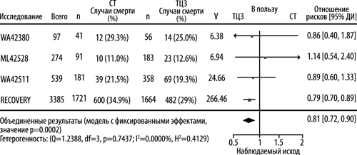

|
 |
| АКТЕМРА® (ACTEMRA®) tocilizumab концентрат д/пригот.р-ра д/инфузий | ||||||||||||||||||||||||||||||||||||||||||||||||||||||||||||||||||||||||||||||||||||||||||||||||||||||||||||||||||||||||||||||||||||||||||||||||||||||||||||||||||||||||||||||||||||||||||||||||||||||||||||||||||||||||||||||||||||||||||||||||||||||||||||||||||||||||||||||||||||||||||||||||||||||||||||||||||||||||||||||||||||
|
Клинико-фармакологическая группа: Специфический иммунодепрессивный препарат. Антагонист рецепторов интерлейкина-6 Номер и дата регистрации: ЛСР-003012/09 от 16.04.09 Код ATX: L04AC07 |
Владелец регистрационного удостоверения: зарегистрировано Представительство: | |||||||||||||||||||||||||||||||||||||||||||||||||||||||||||||||||||||||||||||||||||||||||||||||||||||||||||||||||||||||||||||||||||||||||||||||||||||||||||||||||||||||||||||||||||||||||||||||||||||||||||||||||||||||||||||||||||||||||||||||||||||||||||||||||||||||||||||||||||||||||||||||||||||||||||||||||||||||||||||||||||
Форма выпуска, состав и упаковка Концентрат для приготовления раствора для инфузий в виде прозрачной или опалесцирующей, бесцветной или светло-желтого цвета жидкости.
Вспомогательные вещества: полисорбат 80 - 0.5 мг, сахароза - 50 мг, натрия гидрофосфата додекагидрат - q.s., натрия дигидрофосфата дигидрат - q.s., вода д/и - q.s. 4 мл - флаконы бесцветного стекла (1) - пачки картонные с вкладышами картонными (перегородками)×. Концентрат для приготовления раствора для инфузий в виде прозрачной или опалесцирующей, бесцветной или светло-желтого цвета жидкости.
Вспомогательные вещества: полисорбат 80 - 0.5 мг, сахароза - 50 мг, натрия гидрофосфата додекагидрат - q.s., натрия дигидрофосфата дигидрат - q.s., вода д/и - q.s. 10 мл - флаконы бесцветного стекла (1) - пачки картонные с вкладышами картонными (перегородками)×. Концентрат для приготовления раствора для инфузий в виде прозрачной или опалесцирующей, бесцветной или светло-желтого цвета жидкости.
Вспомогательные вещества: полисорбат 80 - 0.5 мг, сахароза - 50 мг, натрия гидрофосфата додекагидрат - q.s., натрия дигидрофосфата дигидрат - q.s., вода д/и - q.s. 20 мл - флаконы бесцветного стекла (1) - пачки картонные с вкладышами картонными (перегородками)×. × с целью контроля первого вскрытия на пачку наносится защитная голографическая наклейка. | ||||||||||||||||||||||||||||||||||||||||||||||||||||||||||||||||||||||||||||||||||||||||||||||||||||||||||||||||||||||||||||||||||||||||||||||||||||||||||||||||||||||||||||||||||||||||||||||||||||||||||||||||||||||||||||||||||||||||||||||||||||||||||||||||||||||||||||||||||||||||||||||||||||||||||||||||||||||||||||||||||||
| ||||||||||||||||||||||||||||||||||||||||||||||||||||||||||||||||||||||||||||||||||||||||||||||||||||||||||||||||||||||||||||||||||||||||||||||||||||||||||||||||||||||||||||||||||||||||||||||||||||||||||||||||||||||||||||||||||||||||||||||||||||||||||||||||||||||||||||||||||||||||||||||||||||||||||||||||||||||||||||||||||||
Описание препарата основано на официально утвержденной инструкции по применению и утверждено компанией-производителем для издания 2023 г. | ||||||||||||||||||||||||||||||||||||||||||||||||||||||||||||||||||||||||||||||||||||||||||||||||||||||||||||||||||||||||||||||||||||||||||||||||||||||||||||||||||||||||||||||||||||||||||||||||||||||||||||||||||||||||||||||||||||||||||||||||||||||||||||||||||||||||||||||||||||||||||||||||||||||||||||||||||||||||||||||||||||
Фармакологическое действие |
Фармакокинетика |
Показания |
Режим дозирования |
Побочное действие |
Противопоказания |
Беременность и лактация |
Особые указания |
Передозировка |
Лекарственное взаимодействие |
Условия хранения и сроки годности |
Условия реализации
Фармакологическое действие
Механизм действия Тоцилизумаб - рекомбинантное гуманизированное моноклональное антитело к человеческому рецептору интерлейкина-6 (ИЛ-6) из подкласса иммуноглобулинов IgG1. Тоцилизумаб связывается и подавляет как растворимые, так и мембранные рецепторы ИЛ-6 (sIL-6R и mIL-6R). ИЛ-6 является многофункциональным цитокином, вырабатываемым различными типами клеток, и участвует в паракринной регуляции, системных физиологических и патологических процессах, таких как стимуляция секреции Ig, активация Т-клеток, стимуляция выработки белков острой фазы в печени и стимуляция гемопоэза. ИЛ-6 вовлечен в патогенез различных заболеваний, в т.ч. воспалительных заболеваний, остеопороза и новообразований. Нельзя исключить вероятность отрицательного воздействия тоцилизумаба на противоопухолевую и противоинфекционную защиту организма. Роль ингибирования рецептора ИЛ-6 в развитии опухолей неизвестна. У пациентов с коронавирусной инфекцией (COVID-19, COronaVIrus Disease 2019), получавших тоцилизумаб в дозе 8 мг/кг однократно, снижение показателя C-реактивного белка (CРБ) до нормальных значений наблюдалось уже на 7 день. Клиническая эффективность при ревматоидном артрите (РА) Эффективность препарата у пациентов, получавших тоцилизумаб как в монотерапии, так и в комбинации с метотрексатом (МТ) или базисными противовоспалительными препаратами (БПВП), не зависела от наличия и отсутствия ревматоидного фактора, возраста, пола, расовой принадлежности, числа предшествующих курсов лечения или стадии заболевания. Ответ на терапию возникал быстро (уже на второй неделе), в дальнейшем усиливался и сохранялся более 3 лет в продолжающихся открытых расширенных исследованиях. У пациентов, получавших тоцилизумаб в дозе 8 мг/кг, существенно снижался индекс активности заболевания по шкале DAS28 по сравнению с пациентами, получавшими плацебо + БПВП. Число пациентов, достигших клинической ремиссии (DAS28 <2.6) на 24 неделе, было значительно больше в группе терапии тоцилизумабом (27.5-33.6%) по сравнению с контрольной группой (0.8-12.1%). К 52 неделе терапии число пациентов, достигших DAS28 <2.6, увеличивается до 47% по сравнению с 33% на 24 неделе терапии. Хороший или удовлетворительный ответ по критериям EULAR отмечался чаще у пациентов, получавших тоцилизумаб, чем получавших плацебо + БПВП. Через 2 года терапии тоцилизумабом/МТ у 14% пациентов наблюдался значительный клинический ответ (АКР 70 (критерии Американской Коллегии Ревматологов, АКР) сохранялся на протяжении 24 недель и более). Рентгенологическая оценка У 83% пациентов, получавших терапию тоцилизумабом/МТ в течение года, не зарегистрировано прогрессирования деструкции суставов (изменение суммарного индекса Шарпа равно нулю или менее) по сравнению с 67% пациентов, получавших плацебо/МТ. Данный результат сохранялся на протяжении 2 лет терапии. У 93% пациентов отсутствовало прогрессирование деструкции суставов между 52 и 104 неделями терапии. Показатели качества жизни У пациентов, получавших тоцилизумаб в дозе 8 мг/кг (монотерапия или в сочетании с БПВП), по сравнению с теми, кто получал МТ/БПВП, наблюдалось клинически значимое улучшение функциональной активности (по индексу HAQ-DI), снижение утомляемости (по шкале функциональной оценки терапии хронических заболеваний по показателю утомляемости FACIT-Fatigue), а также улучшение как показателей физического, так и показателей психического здоровья по опроснику SF-36. Лабораторные показатели После введения тоцилизумаба происходит быстрое снижение средних значений острофазовых показателей, С-реактивного белка, СОЭ, сывороточного амилоида А и фибриногена, снижение числа тромбоцитов в пределах нормальных значений, а также увеличение гемоглобина, которое в наибольшей степени наблюдалось у пациентов с хронической анемией, связанной с РА. Клиническая эффективность у пациентов с ранним ревматоидным артритом (рРА), ранее не получавших терапию МТ При применении тоцилизумаба в монотерапии в дозе 8 мг/кг и тоцилизумаба в дозе 4 или 8 мг/кг каждые 4 недели в комбинации с МТ индекс активности заболевания по шкале DAS28 существенно снижается в группах, получавших тоцилизумаб в дозе 8 мг/кг, по сравнению с пациентами, получавшими монотерапию МТ. Число пациентов, достигших клинической ремиссии (DAS28 <2.6) на 24 неделе, значительно больше в группах, получавших тоцилизумаб (38.7-44.8%), по сравнению с группой монотерапии МТ (15%). К 52 неделе число пациентов, достигших DAS28 <2.6 в группах терапии тоцилизумабом, увеличивается до 39.4-49% по сравнению с 19.5% в группе монотерапии МТ. Число пациентов, достигших ответа АКР 20, 50, 70, также существенно выше в группах терапии тоцилизумабом (70.2-74.5%; 47.6-56.9%; 30.1-38.6% на 24 неделе и 63-67.2%; 49.3-55.9%; 36-43.1% на 52 неделе, соответственно) по сравнению с группой монотерапии МТ (65.2%; 43.2%; 25.4% на 24 неделе и 57.1%; 40.8%; 28.9% на 52 неделе, соответственно). Рентгенологическая оценка Отсутствие прогрессирования деструкции суставов (изменение суммарного индекса Шарпа равно нулю или менее) наблюдается у 82-83% пациентов, получавших тоцилизумаб в дозе 8 мг/кг в качестве монотерапии или в комбинации с МТ, по сравнению с 73% пациентов в группе монотерапии МТ. Показатели качества жизни Клинически значимое улучшение функциональной активности по индексу HAQ-DI наблюдается у пациентов, получавших тоцилизумаб в дозе 8 мг/кг в качестве монотерапии или комбинации с МТ, по сравнению с теми, кто получал монотерапию МТ. При монотерапии тоцилизумабом (в дозе 8 мг/кг в/в каждые 4 недели у пациентов с РА, с непереносимостью МТ или при нецелесообразности продолжения терапии МТ (в т.ч. при неадекватном ответе на терапию МТ)) наблюдалось более выраженное статистически значимое снижение активности заболевания по шкале DAS28 по сравнению с монотерапией адалимумабом (в дозе 40 мг п/к каждые 2 недели). Количество пациентов, ответивших на терапию с показателями DAS28 <2.6 и DAS28 ≤3.2, было больше при терапии тоцилизумабом, чем при терапии адалимумабом (39.9% против 10.5% и 51.5% против 19.8%, соответственно). Ответы АКР 20, 50, 70 наблюдались у 65%, 47.2%, 32.5% пациентов, получавших тоцилизумаб, по сравнению с 49.4%, 27.8%, 17.9% пациентов, получавших адалимумаб. Клиническая эффективность при полиартикулярном ювенильном идиопатическом артрите (пЮИА) Ответы АКР 30, 50, 70, 90 были получены у 89.4%, 83.0%, 62.2% и 26.1% пациентов, соответственно. Доля пациентов с ответом АКР 30, 50, 70 на 40 неделе терапии относительно показателей на начало терапии составила 74.4%, 73.2% и 64.6% соответственно. Клиническая эффективность при системном ювенильном идиопатическом артрите (сЮИА) Эффективность тоцилизумаба для лечения активного сЮИА изучалась в 12-недельном рандомизированном двойном слепом плацебо контролируемом периоде исследования с 2 параллельными группами. На 12 неделе доля пациентов, достигших ответа АКР 30, 50, 70, 90 при ЮИА, также была больше в группе терапии тоцилизумабом, чем в группе плацебо: 90.7% против 24.3%, 85.3% против 10.8%, 70.7% против 8.1%, 37.3% против 5.4%, соответственно (р<0.0001). Ответ на терапию сохранялся и в открытом расширенном периоде исследования. Системные эффекты У 85% пациентов, имевших исходно лихорадку, через 12 недель терапии тоцилизумабом лихорадка отсутствовала по сравнению с 21% пациентов, получавших плацебо (р<0.0001). Кроме того, у 64% пациентов, имевших сыпь исходно, через 12 недель терапии тоцилизумабом сыпь отсутствовала по сравнению с 11% пациентов, получавших плацебо (р=0.0008). Наблюдалось значимое снижение интенсивности болевого синдрома в группе терапии тоцилизумабом по сравнению с плацебо на 12 неделе. Скорректированное среднее изменение оценки боли по визуальной аналоговой шкале (ВАШ) после 12 недель терапии тоцилизумабом соответствовало 41 пункту (от 0 до 100 пунктов) по сравнению с 1 пунктом у пациентов, получавших плацебо (р<0.0001). Системные эффекты сохранялись и в продолжающемся открытом расширенном периоде исследования. Снижение дозы ГКС У 8 из 31 пациента в группе плацебо и у 48 из 70 пациентов в группе тоцилизумаба, получавших ГКС исходно, наблюдался ответ АКР 70 при ЮИА на 6 или 8 неделе, что позволило снизить дозу ГКС. При этом 24% пациентов в группе тоцилизумаба и 3% пациентов в группе плацебо смогли снизить дозу ГКС как минимум на 20% без последующего снижения частоты ответа по критериям АКР 30 при ЮИА или возникновения системных проявлений к 12 неделе (р=0.028). Снижение дозы ГКС продолжилось, при этом 44 пациента не получали ГКС на 44 неделе, и ответы АКР не изменялись. Показатели качества жизни На 12 неделе доля пациентов в группе тоцилизумаба, демонстрирующих минимальное клинически значимое улучшение показателя по опроснику CHAQ-DI (определенного как снижение индивидуального общего балла на ≥0.13), была значительно выше, чем доля пациентов в группе плацебо - 77% против 19%, соответственно (р<0.0001). Ответы сохранялись и в продолжающемся открытом расширенном периоде исследования. Лабораторные показатели Исходно у 67% пациентов из группы тоцилизумаба содержание гемоглобина было ниже нормального диапазона. У 80% из этих пациентов на 12 неделе наблюдалось увеличение Hb в пределах нормального диапазона по сравнению с 7% пациентов в группе плацебо (р<0.0001). У 88% пациентов из группы тоцилизумаба, имевших исходно сниженное содержание гемоглобина, его уровень увеличился на ≥10 г/л к 6 неделе, в группе плацебо частота повышения составила 3% (р<0.0001). Доля пациентов, имевших исходно тромбоцитоз и у которых на 12 неделе наблюдалось нормальное число тромбоцитов, была выше в группе тоцилизумаба по сравнению с группой плацебо - 90% против 4% (р<0.0001). После введения тоцилизумаба происходило быстрое снижение средних значений острофазовых показателей: С-реактивного белка, СОЭ и сывороточного амилоида А. Клиническая эффективность при COVID-19 Исследование совместной исследовательской группы RECOVERY (рандомизированная оценка терапии по поводу COVID-19) у госпитализированных взрослых пациентов с диагнозом COVID-19 Исследование RECOVERY представляло собой крупномасштабное, рандомизированное, контролируемое, открытое, многоцентровое платформенное исследование, проведенное в Великобритании для оценки эффективности и безопасности потенциальных вариантов терапии у госпитализированных взрослых пациентов с тяжелой формой COVID-19. Все пациенты, подходящие для включения в исследование, получали стандартную терапию и прошли начальную (основную) рандомизацию. Пациенты, подходящие для включения в исследование, имели подозреваемую на основании клинических признаков или лабораторно подтвержденную инфекцию SARS-CoV-2 и не имели медицинских противопоказаний к применению любого из рассматриваемых в исследовании видов терапии. Пациенты с клиническими подтверждениями прогрессирующей инфекции COVID-19 (определяемыми как уровень сатурации крови кислородом (SpO2) <92% при дыхании атмосферным воздухом или получение терапии кислородом, а также уровень CРБ≥75мг/л) могли пройти вторую рандомизацию в группы, получавшие либо тоцилизумаб в/в, либо только стандартную терапию. Анализы эффективности были проведены в популяции в соответствии с назначенным лечением (intent-to-treat, ITT), которая включала в себя 4116 рандомизированных пациентов: 2022 пациента были рандомизированы в группу, получавшую тоцилизумаб + стандартную терапию, 2094 пациента - в группу, получавшую только стандартную терапию. Исходные демографические характеристики и характеристики заболевания популяции ITT были надлежащим образом сбалансированы между группами терапии. Средний возраст участников составлял 63.6 года (стандартное отклонение [СО]: 13.6 года). Большинство пациентов были мужского пола (67%) и относились к европеоидной расе (76%). Медиана (диапазон) значений уровня CРБ составляла 143 мг/л (75-982). На исходном уровне 0.2% (N=9) пациентов не получали дополнительный кислород, 45% пациентов требовалась низкопоточная кислородная терапия, 41% пациентов требовалась высокопоточная кислородная терапия и 14% пациентов требовалась инвазивная искусственная вентиляция легких (ИВЛ); 82% пациентов получали системные ГКС. Наиболее частыми сопутствующими заболеваниями были сахарный диабет (28.4%), заболевание сердца (22.6%) и хроническая болезнь легких (23.3%). Первичным показателем исхода было время до момента смерти в период до дня 28. Отношение рисков, демонстрирующее сравнение группы, получавшей тоцилизумаб + стандартную терапию, с группой, получавшей только стандартную терапию, составило 0.85 (95% ДИ: от 0.76 до 0.94), статистически значимый результат (р=0.0028). Расчетные показатели вероятности смерти ко дню 28 составили 30.7% и 34.9% в группах, получавших тоцилизумаб и только стандартную терапию соответственно. Расчетная разность рисков составила -4.1% (95% ДИ: от -7.0 до -1.3%), что согласуется с результатами первичного анализа. Отношение рисков в заранее определенной подгруппе пациентов, получавших системные ГКС на исходном уровне, составляло 0.79 (95% ДИ: от 0.70 до 0.89), а в заранее определенной подгруппе пациентов, не получавших системные ГКС на исходном уровне, отношение рисков составило 1.16 (95% ДИ: от 0. 91 до 1.48). Медиана времени до выписки из стационара составляла 19 дней в группе, получавшей тоцилизумаб + стандартную терапию, и >28 дней в группе, получавшей стандартную терапию (отношение рисков [95% ДИ] = 1.22 [от 1.12 до 1.33]). Среди пациентов, которым не требовалась инвазивная ИВЛ на исходном уровне, доля пациентов, у которых появилась потребность в ИВЛ или наступила смерть ко дню 28, составляла 35% (619/1754) в группе, получавшей тоцилизумаб + стандартную терапию, и 42% (754/1800) в группе, получавшей только стандартную терапию (отношение рисков [95% ДИ] = 0.84 [от 0.77 до 0.92] р<0.0001). Исследование ML42528 (EMPACTA) Исследование ML42528 представляло собой глобальное рандомизированное, двойное слепое, плацебо-контролируемое, многоцентровое исследование III фазы по оценке эффективности и безопасности применения тоцилизумаба для в/в введения в комбинации со стандартной терапией у госпитализированных взрослых пациентов с пневмонией, ассоциированной с COVID-19, не находящихся на ИВЛ. Для включения в исследование подходили пациенты в возрасте, по меньшей мере, 18 лет, имевшие инфекцию SARS-CoV-2, подтвержденную положительным результатом теста методом полимеразной цепной реакции с обратной транскриптазой (ОТ-ПЦР), имевшие пневмонию, подтвержденную результатами рентгенологического исследования, и уровень SpO2 <94% при дыхании атмосферным воздухом. Стандартная терапия могла включать в себя противовирусную терапию, применение системных ГКС в низких дозах и поддерживающую терапию. Пациенты были рандомизированы в соотношении 2:1 в группы, получавшие одну инфузию тоцилизумаба в дозе 8 мг/кг, при максимальной дозе 800 мг, либо плацебо. Если клинические признаки или симптомы ухудшались или не улучшались, могла быть введена одна дополнительная инфузия тоцилизумаба или плацебо по слепой схеме через 8-24 ч после проведения первой инфузии. Из 389 пациентов, которые были рандомизированы, анализы эффективности были проведены в модифицированной популяции в соответствии с назначенным лечением (modified intent-to-treat, mITT), которая включала в себя пациентов, получивших любое количество исследуемого лекарственного препарата (249 пациентов в группе тоцилизумаба; 128 пациентов в группе плацебо). Исходные демографические характеристики и характеристики заболевания были в целом сбалансированы между группами терапии. В популяции mITT (n=377) на момент рандомизации медиана возраста составляла 57 лет (диапазон: от 20 до 95); 59.2% пациентов были мужского пола, 56% пациентов имели испанское или латиноамериканское этническое происхождение, 52.8% пациентов принадлежали к европеоидной расе, 20.4% пациентов были американскими индейцами/представителями коренного населения Аляски, 15.1% пациентов были представителями негроидной расы/афроамериканцами и 1.6% пациентов были представителями монголоидной расы. На исходном уровне 35 (9.3%) пациентов не получали дополнительный кислород, 242 (64.2%) пациентам требовалась низкопоточная кислородная терапия и 100 (26.5%) пациентам требовалась высокопоточная кислородная терапия. Медиана времени с момента возникновения симптомов составляла 8.0 дня. На исходном уровне в обеих группах терапии в совокупности 72.7% пациентов получали системные глюкокортикостероиды и 47.7% пациентов получали ремдесивир. Значения медианы (диапазон) уровня СРВ и ферритина составляли, соответственно, 136.10 мг/л (2.5- 3776.0) и 1.4 пмоль/мл (0.03-122.3). Наиболее частыми сопутствующими заболеваниями были артериальная гипертензия (48.3%), сахарный диабет (40.6%), гиперлипидемия (27.6%) и ожирение (24.4%). Первичной конечной точкой оценки эффективности была совокупная доля пациентов, у которых появилась потребность в ИВЛ или наступила смерть ко дню 28. Для пациентов, которые получали тоцилизумаб, наблюдалось статистически значимое улучшение в отношении времени до прогрессирования до ИВЛ или смерти в сравнении с пациентами, которые получали плацебо (значение р для логрангового критерия = 0.0360; ОР [95% ДИ] = 0.56 [от 0.33 до 0.97]). Совокупная доля пациентов, у которых появилась потребность в ИВЛ или наступила смерть ко дню 28 (оценка с использованием метода Каплана-Мейера), составила 12.0% (95% ДИ: от 8.52 до 16.86%) в группе, получавшей тоцилизумаб, и 19.3% (95% ДИ: от 13.34 до 27.36%) в группе, получавшей плацебо Медиана времени до выписки из стационара либо "готовности к выписке" за период до дня 28 составляла 6.0 дня в группе, получавшей тоцилизумаб, и 7.5 дня в группе, получавшей плацебо (отношение рисков =1.16 [95% ДИ: от 0.91 до 1.48]). Показатель смертности на день 28 составлял 10.4% в группе, получавшей тоцилизумаб, в сравнении с 8.6% в группе, получавшей плацебо (взвешенная разница (группа тоцилизумаба - группа плацебо): 2.0% [95% ДИ: от -5.2 до 7.8%]). Показатель смертности на день 60 (ретроспективный анализ) составлял 11.2% в группе, получавшей тоцилизумаб, в сравнении с 10.9% в группе, получавшей плацебо (взвешенная разница (группа тоцилизумаба - группа плацебо): 0.5% [95% ДИ: от -6.9 до 6.8%]). Исследование WA42380 (COVACTA) Исследование WA42380 представляло собой глобальное рандомизированное, двойное слепое, плацебо-контролируемое, многоцентровое исследование III фазы по оценке эффективности и безопасности применения тоцилизумаба для внутривенного введения в комбинации со стандартной терапией у взрослых пациентов, госпитализированных с тяжелой пневмонией, ассоциированной с COVID-19. Для включения в исследование подходили пациенты в возрасте, по меньшей мере, 18 лет, имевшие инфекцию SARS-CoV-2, подтвержденную положительным результатом теста методом ОТ-ПЦР, имевшие пневмонию, подтвержденную результатами рентгенологического исследования, и показатель SpO2≤93% при дыхании атмосферным воздухом, либо отношение парциального давления кислорода в артериальной крови к фракции кислорода во вдыхаемом воздухе 300 мм рт. ст. или менее. Стандартная терапия могла включать в себя противовирусную терапию, применение ГКС в низких дозах, применение реконвалесцентной плазмы и другую поддерживающую терапию. Пациенты были рандомизированы в соотношении 2:1 в группы, получавшие одну инфузию тоцилизумаба в дозе 8 мг/кг, при максимальной дозе 800 мг, либо плацебо. Если клинические признаки или симптомы ухудшались или не улучшались, могла быть введена одна дополнительная инфузия тоцилизумаба или плацебо по слепой схеме, через 8-24 часа после проведения первой инфузии. Из 452 пациентов, которые были рандомизированы, анализы эффективности были проведены в популяции mITT, которая включала в себя пациентов, получивших любое количество исследуемого лекарственного препарата (294 пациента в группе тоцилизумаба; 144 пациента в группе плацебо). Исходные демографические характеристики и характеристики заболевания были в целом сбалансированы между группами терапии. Для популяции mITT в целом (п=438) на момент рандомизации медиана возраста составляла 62 года (диапазон: 22-96, при этом 44.3% пациентов были в возрасте 65 лет или старше); 69.9% пациентов были мужского пола, 32.2% пациентов были испанского или латиноамериканского этнического происхождения, 57.5% пациентов принадлежали к европеоидной расе, 15.1% пациентов были представителями негроидной расы/афроамериканцами и 8.7% пациентов были представителями монголоидной расы. На исходном уровне 3.4% пациентов не получали дополнительный кислород, 27.9% пациентов получали низкопоточную кислородную терапию, 30.4% пациентов находились на неинвазивной ИВЛ или получали высокопоточную кислородную терапию и 38.4% пациентов находились на инвазивной ИВЛ. Медиана времени с момента возникновения симптомов составляла 11.0 дней. На исходном уровне в обеих группах терапии в совокупности 22.4% пациентов получали системные глюкокортикостероиды и 5.7% пациентов получали ремдесивир. Значения медианы (диапазон) уровня ИЛ-6, CРБ и ферритина составляли, соответственно, 85.8 нг/л (3.1-4020), 155.15 мг/л (1.1-499.6) и 2.20 пмоль/мл (0.0-75.3). Наиболее частыми сопутствующими заболеваниями были артериальная гипертензия (62.1%), сахарный диабет (38.1%), нарушения со стороны сердечно-сосудистой системы (28.1%) и ожирение (20.5%). Первичной конечной точкой для оценки эффективности был клинический статус в день 28, оцениваемый с использованием порядковой шкалы со следующими 7 категориями: 1. выписан из стационара (либо "готов к выписке", что определяется как достижение нормальной температуры тела и частоты дыхания, а также стабильного уровня сатурации крови кислородом при дыхании атмосферным воздухом или при использовании ≤2 л дополнительного кислорода); 2. в общей палате (или "готов к переводу в общую палату"), без потребности в дополнительном кислороде; 3. в общей палате (или "готов к переводу в общую палату"), требуется дополнительный кислород; 4. в ОИТ или в общей палате, требуется неинвазивная вентиляция легких или высокопоточная кислородная терапия; 5. в отделении интенсивной терапии, требуется интубация или ИВЛ; 6. в ОИТ, требуется экстракорпоральная мембранная оксигенация или ИВЛ и дополнительная поддержка органов (например, применение вазопрессорных препаратов, заместительная почечная терапия); 7. смерть. При сравнении группы, получавшей тоцилизумаб, с группой, получавшей плацебо, не было выявлено статистически значимого различия в распределении оценок клинического статуса по порядковой шкале с 7 категориями в день 28. Медиана категории клинического статуса в день 28 была категория 1.0 в группе, получавшей тоцилизумаб, и 2.0 в группе, получавшей плацебо (отношение шансов (ОШ) 1.19 [95% ДИ: 0.81, 1.76]). Медиана времени до выписки из стационара либо "готовности к выписке" за период до дня 28 составляла 20 дней в группе, получавшей тоцилизумаб, и 28 дней в группе, получавшей плацебо (отношение рисков = 1.35 [95% ДИ: от 1.02 до 1.79]). Показатель смертности на день 28 составлял 19.7% в группе, получавшей тоцилизумаб, в сравнении с 19.4% в группе, получавшей плацебо (взвешенная разница (группа тоцилизумаба - группа плацебо): 0.3% [95% ДИ: от -7.6 до 8.2]. Показатель смертности на день 60 составлял 24.5% в группе, получавшей тоцилизумаб, в сравнении с 25.0% в группе, получавшей плацебо (взвешенная разница (группа тоцилизумаба - группа плацебо): -0.5% [95% ДИ: от -9.1 до 8.0]). Исследование WA42511 (REMDACTA) Исследование WA42511 представляло собой глобальное рандомизированное, двойное слепое, плацебо-контролируемое, многоцентровое исследование III фазы, проведенное с целью оценки эффективности и безопасности применения тоцилизумаба для внутривенного введения в комбинации с ремдесивиром в сравнении с соответствующим плацебо в комбинации с ремдесивиром, у госпитализированных взрослых пациентов с тяжелой пневмонией, ассоциированной с COVID-19. Для включения в исследование подходили пациенты в возрасте, по меньшей мере, 12 лет с подтвержденной инфекцией SARS-CoV-2, включая положительный результат теста методом полимеразной цепной реакции (ПЦР), и пневмонией, подтвержденной результатами рентгенологического исследования, которым требовался дополнительный кислород в количестве >6 л/мин для поддержания уровня SpO2>93%. Пациенты были рандомизированы в соотношении 2:1 в группы, получавшие по слепой схеме либо тоцилизумаб + ремдесивир, либо соответствующее плацебо + ремдесивир. Исследуемую терапию применяли в комбинации со стандартной терапией в соответствии с локальными руководствами (например, ГКС, поддерживающая терапия). Пациенты, распределенные в группу лечения комбинацией тоцилизумаб + ремдесивир, получили одну инфузию тоцилизумаба в дозе 8 мг/кг, при максимальной дозе 800 мг, а пациенты, распределенные в группу лечения комбинацией плацебо + ремдесивир, получили одну инфузию плацебо. В обеих группах в случаях, если клинические признаки или симптомы ухудшались или не улучшались, могла быть введена одна дополнительная инфузия тоцилизумаба или плацебо по слепой схеме, через 8-24 часа после проведения первой инфузии. Из 649 пациентов, которые были рандомизированы, анализы эффективности были проведены в популяции mITT, которая включала в себя пациентов, получивших любое количество тоцилизумаба/плацебо (430 пациентов в группе лечения комбинацией тоцилизумаб + ремдесивир; 210 пациентов в группе лечения комбинацией плацебо + ремдесивир). Исходные демографические характеристики и характеристики заболевания были в целом сбалансированными между группами терапии. Для популяции mITT в целом (п=640) на момент рандомизации медиана возраста составляла 60 лет (диапазон: от 20 до 93 лет, при этом 38.3% пациентов были в возрасте 65 лет или старше); 63.3% пациентов были мужского пола, 51.6% пациентов были испанского или латиноамериканского этнического происхождения, 67% пациентов принадлежали к европеоидной расе, 10.9% пациентов были представителями негроидной расы/афроамериканцами и 3.4% пациентов были представителями монголоидной расы. На исходном уровне 6.6% пациентов получали низкопоточную кислородную терапию, 79.8% пациентов находились на неинвазивной ИВЛ или получали высокопоточную кислородную терапию и 13.6% пациентов находились на инвазивной ИВЛ. Медиана времени с момента возникновения симптомов составляла 8 дней. На исходном уровне большинство пациентов получали ГКС (84.2% во всех группах терапии в совокупности). Значения медианы (диапазон) уровня CРБ и ферритина составляли 98.20 мг/л (1.3-418.3) и 2.13 пмоль/мл (0.1-30.8) соответственно. Наиболее частыми сопутствующими заболеваниями были артериальная гипертензия (61.7%), сахарный диабет (39.5%) и ожирение (27%). Первичной конечной точкой для оценки эффективности было время с момента рандомизации до выписки из стационара либо "готовности к выписке" за период до дня 28. Не было выявлено статистически значимой разницы между группами терапии в отношении времени до выписки из стационара либо "готовности к выписке" за период до дня 28 (отношение рисков: 0.965 [95% ДИ: от 0.78 до 1.19]) или времени до начала использования ИВЛ или смерти за период до дня 28 (отношение рисков: 0.980 [95% ДИ: от 0.72 до 1.34]). Показатель смертности на день 28 составлял 18.1% в группе, получавшей тоцилизумаб, в сравнении с 19.5% в группе, получавшей плацебо (взвешенная разница (группа тоцилизумаба - группа плацебо): -1.3% [95% ДИ: от -7.8 до 5.2%]). Показатель смертности на день 60 составлял 22.6% в группе, получавшей тоцилизумаб, в сравнении с 25.7% в группе, получавшей плацебо (взвешенная разница (группа тоцилизумаба - группа плацебо): -3.0% [95% ДИ: от -10.1 до 4%]). Метаанализ по результатам исследований RECOVERY, EMPACTA (исследование ML42528), COVACTA (исследование WA42380) и REMDACTA (исследование WA42511) для пациентов, получавших терапию системными ГКС на исходном уровне Метаанализ на уровне исследований был проведен по результатам 3 исследований компании Рош и исследования RECOVERY. Для каждого исследования была введена оценка отношения рисков для времени до момента смерти за период до дня 28 в подгруппе пациентов, получавших системные кортикостероиды на исходном уровне (тоцилизумаб 597 пациентов, и плацебо: 313 пациентов из исследований компании Рош; тоцилизумаб: 1664 пациента, и стандартная терапия: 1721 пациент из исследования RECOVERY). Комбинированный показатель отношения рисков указывал на то, что терапия тоцилизумабом (п=2261) приводила к относительному уменьшению на 19% риска смерти за период до дня 28 (отношение рисков = 0.81; 95% ДИ: 0.72, 0.90; р=0.0002) в сравнении со стандартной терапией (п=2034). Рисунок 1. Метаанализ времени до момента смерти за период до дня 28 в субпопуляции пациентов, получавших кортикостероиды на исходном уровне.  Отношение рисков Кокса для исследований компании Рош. Логранговый показатель O-E для исследования RECOVERY, в котором значение ОР было вычислено путем принятия In(ОР) равным (O-E)/V при нормальной дисперсии I/V. Модель с фиксированными эффектами, в которую In(ОР) был включен в качестве ответа и V - в качестве весов для оценки объединенного эффекта. СТ - стандартная терапия, ТЦЗ - тоцилизумаб Источник данных компании Рош: root/clinical_studies/R04877533/share/pool_COVID19/prod/outdata_vad Доклинические данные безопасности Канцерогенность: исследования по изучению канцерогенности тоцилизумаба не проводились. Имеющиеся доклинические данные демонстрируют вклад плейотропного ИЛ-6 в прогрессирование злокачественных новообразований и устойчивость к апоптозу при различных формах рака. Эти данные не предполагают, что лечение тоцилизумабом приводит к существенному риску развития и прогрессирования рака. Мутагенность: стандартные генотоксические тесты как в прокариотических, так и в эукариотических клетках были отрицательными. Влияние на фертильность: имеющиеся доклинические данные не предполагают влияния аналогов тоцилизумаба на фертильность. В исследованиях по изучению хронической токсичности у яванских макак и у самок или самцов мышей с недостаточностью ИЛ-6 отрицательного влияния тоцилизумаба на эндокринные или репродуктивные органы не обнаружено. Тератогенность: не обнаружено прямого или опосредованного неблагоприятного влияния на беременность или внутриутробное развитие при в/в введении тоцилизумаба яванским макакам на ранних сроках гестационного периода. Прочее: отмечалось незначительное увеличение случаев спонтанного выкидыша/внутриутробной гибели плода при высоком уровне системного кумулятивного воздействия (более чем в 100 раз превышающего таковое у человека) при введении дозы 50 мг/кг/сут в сравнении с плацебо или меньшим уровнем вводимых доз. Частота выкидыша была в пределах исторического контроля для яванских макак, содержащихся в неволе; отдельные случаи выкидыша/внутриутробной гибели не демонстрировали какой-либо взаимосвязи между данными явлениями и дозой или продолжительностью введения тоцилизумаба. Несмотря на то, что ИЛ-6, по-видимому, не играет решающей роли в развитии плода или иммунологической регуляции системы мать-плод, взаимосвязь этих явлений с введением тоцилизумаба не может быть исключена. Наблюдалась экскреция мышиного аналога тоцилизумаба в молоко лактирующих мышей. Применение мышиного аналога тоцилизумаба не оказывало токсичного действия на ювенильных мышей. В частности, не наблюдалось нарушения роста скелета, иммунной функции и полового развития. Фармакокинетика
Фармакокинетика тоцилизумаба характеризуется нелинейным выведением, представляющим комбинацию линейного клиренса и выведения по Михаэлис-Ментен. Нелинейная часть выведения тоцилизумаба приводит к более чем дозозависимому увеличению экспозиции. Фармакокинетические параметры тоцилизумаба не меняются с течением времени. Т.к. общий клиренс зависит от концентрации тоцилизумаба в сыворотке, Т1/2 тоцилизумаба также является зависимым от его концентрации и может быть рассчитан только при наличии значения сывороточной концентрации. Популяционный фармакокинетический анализ, проведенный во всех популяциях пациентов, не выявил связи между кажущимся клиренсом и наличием антител к тоцилизумабу. Ревматоидный артрит Фармакокинетика тоцилизумаба сопоставима у здоровых добровольцев и пациентов с РА. Таблица 1. Прогнозируемые средние фармакокинетические параметры (± стандартное отклонение, СО) тоцилизумаба при равновесном состоянии у пациентов с РА
* t на протяжении 4 недель. При высоких значениях концентрации тоцилизумаба в сыворотке линейный клиренс преобладает над общим клиренсом тоцилизумаба, и конечный Т1/2 составляет приблизительно 21.5 дней (на основе приблизительных параметров популяции пациентов). В то время как после в/в введения Cmax дозозависимо увеличивается между дозами 4 мг/кг и 8 мг/кг каждые 4 недели, более чем дозозависимое увеличение наблюдалось для Cmean и Ctrough. В равновесном состоянии значения Cmean и Ctrough были в 3.2 и 32 раза выше при применении тоцилизумаба в дозе 8 мг/кг по сравнению с дозой 4 мг/кг, соответственно. Коэффициенты накопления AUC и Cmax после многократного применения тоцилизумаба в дозах 4 мг/кг и 8 мг/кг каждые 4 недели были ниже, чем коэффициенты накопления Ctrough (2.62 и 2.47), благодаря участию нелинейного клиренса при более низких концентрациях тоцилизумаба. Более 90% равновесного состояния при Cmax достигается после первой в/в инфузии; 90% равновесное состояние при AUCt и Cmean достигается после первой и третьей в/в инфузии тоцилизумаба в дозе 4 мг/кг и 8 мг/кг, соответственно; приблизительно 90% равновесное состояние при Ctrough достигается после четвертой в/в инфузии тоцилизумаба. Масса тела является значимым фактором, влияющим на фармакокинетику тоцилизумаба. При в/в инфузии, рассчитанной в мг на кг массы тела, у пациента с массой тела ≥100 кг ожидается более высокая средняя экспозиция в равновесном состоянии по сравнению со средним значением в популяции пациентов. Таким образом, не рекомендуется увеличение дозы препарата выше 800 мг на одну инфузию у пациентов с массой тела ≥100 кг (см. раздел "Режим дозирования"). Полиартикулярный ювенильный идиопатический артрит (пЮИА) После в/в применения приблизительно 90% равновесное состояние достигается к 12 неделе при введении в дозе 10 мг/кг (масса тела <30 кг) и к 16 неделе при введении в дозе 8 мг/кг (масса тела ≥30 кг). Таблица 2. Прогнозируемые средние фармакокинетические параметры (± стандартное отклонение, СО) тоцилизумаба при равновесном состоянии у пациентов с пЮИА
* t на протяжении 4 недель. Системный ювенильный идиопатический артрит После в/в применения приблизительно 90% равновесное состояние достигается к восьмой неделе при введении в дозе 12 мг/кг и 8 мг/кг 1 раз в 2 недели. Таблица 3. Прогнозируемые средние фармакокинетические параметры (± стандартное отклонение, СО) тоцилизумаба при равновесном состоянии у пациентов с сЮИА
* t на протяжении 2 недель. Фармакокинетические параметры тоцилизумаба у пациентов в возрасте до 2 лет были сопоставимы с фармакокинетическими параметрами у пациентов старше 2 лет с массой тела <30 кг при в/в применении тоцилизумаба (в дозе 12 мг/кг каждые 2 недели). COVID-19 Фармакокинетику тоцилизумаба у взрослых пациентов с COVID-19 оценивали в исследованиях WA42380 (COVATA) и CA42481 (MARIPOSA) посредством популяционного фармакокинетического анализа, в который было включено 380 взрослых пациентов. Пациенты получали одну или две в/в инфузии тоцилизумаба в дозе 8 мг/кг, которые вводили с интервалом, как минимум, 8 ч. Таблица 4. Расчетные средние (±СО) фармакокинетические параметры после в/в введения тоцилизумаба в дозе 8 мг/кг
В ходе популяционного фармакокинетического анализа масса тела и тяжесть заболевания были определены как значимые ковариаты, которые оказывают влияние на фармакокинетику тоцилизумаба. При режиме дозирования тоцилизумаба 8 мг/кг и максимальной дозой 800 мг в рамках отдельной категории порядковой шкалы (ПШ) по сравнению с пациентами со средней массой тела 80 кг у пациентов с массой тела менее 60 кг экспозиция была на 20% ниже. Экспозиция у пациентов с массой тела более 100 кг находилась в том же диапазоне экспозиций, что и у пациентов со средней массой тела 80 кг. Для пациента с массой тела 80 кг экспозиция снижалась с увеличением тяжести заболевания, для каждой последующей категории ПШ, экспозиция соответственно снижалась на 13%. Распределение После в/в введения тоцилизумаб претерпевает двухфазное выведение из системного кровотока. У пациентов с РА Vd в центральной камере составляет 3.5 л, в периферической камере – 2.9 л, а Vd в равновесном состоянии составляет 6.4 л. У детей с пЮИА Vd в центральной камере составляет 1.98 л, в периферической камере – 2.1 л, а Vd в равновесном состоянии составляет 4.08 л. У детей с сЮИА Vd в центральной камере составляет 1.87 л, в периферической камере – 2.14 л, а Vd в равновесном состоянии составляет 4.01 л. У взрослых пациентов с COVID-19 Vd в центральной камере составляет 4.52 л, в периферической камере - 4.23, таким образом, Vd составляет 8.75 л Выведение Общий клиренс тоцилизумаба зависит от концентрации и представляет собой сумму линейного и нелинейного клиренса. Линейный клиренс составляет 12.5 мл/ч у пациентов с РА, 5.8 мл/ч у детей с пЮИА и 5.7 мл/ч у детей с сЮИА. Нелинейный клиренс, зависящий от концентрации, имеет наибольшее значение при низких концентрациях тоцилизумаба. При более высоких концентрациях тоцилизумаба преобладает линейный клиренс в связи с насыщением пути нелинейного клиренса. Т.к. общий клиренс зависит от сывороточной концентрации тоцилизумаба, Т1/2 тоцилизумаба также является зависимым от его концентрации и может быть рассчитан только при наличии значения сывороточной концентрации. При РА зависимый от концентрации кажущийся Т1/2 для тоцилизумаба в равновесном состоянии в дозе 4 мг/кг 1 раз в 4 недели составляет до 11 дней, а для тоцилизумаба в дозе 8 мг/кг 1 раз в 4 недели – до 13 дней. При высоких значениях концентрации тоцилизумаба в сыворотке линейный клиренс преобладает над общим клиренсом тоцилизумаба, и конечный Т1/2 составляет приблизительно 21.5 дней (на основе приблизительных параметров популяции пациентов). У детей с пЮИА эффективный Т1/2 тоцилизумаба в равновесном состоянии (между введениями в дозе 8 мг/кг для детей с массой тела ≥30 кг или в дозе 10 мг/кг для детей с массой тела <30 кг в равновесном состоянии) составляет до 17 дней. У детей с сЮИА эффективный Т1/2 тоцилизумаба в равновесном состоянии (между введениями в дозе 8 мг/кг и 12 мг/кг) составляет до 16 дней. У взрослых пациентов с COVID-19 сывороточные концентрации были ниже предела количественного определения по прошествии 35 дней (в среднем) после введения одной инфузии тоцилизумаба в дозе 8 мг/кг. Средний линейный клиренс в популяционном фармакокинетическом анализе составил 17.6 мл/ч у пациентов с категорией 3 ПШ (ПШ 3 - пациенты, которым требуется поддерживающая терапия кислородом) на исходном уровне, 22.5 мл/ч у пациентов с категорией 4 ПШ (пациенты, которым требуется высокопоточная кислородная терапия или неинвазивная вентиляция легких) на исходном уровне, 29 мл/ч у пациентов с категорией 5 ПШ (пациенты, которым требуется ИВЛ) на исходном уровне, 35 мл/ч у пациентов с категорией 6ПШ (пациенты, которым требуется экстракорпоральная мембранная оксигенация (ЭКМО) или ИВЛ и дополнительная поддержка органов) на исходном уровне. Фармакокинетика у особых групп пациентов Пациенты с печеночной недостаточностью. Фармакокинетика тоцилизумаба у пациентов с печеночной недостаточностью не изучалась. Пациенты с почечной недостаточностью. Специальных исследований у пациентов с почечной недостаточностью не проводилось. У большинства пациентов с РА, учтенных в популяционном фармакокинетическом анализе, была нормальная функция почек или нарушение функции почек легкой степени тяжести (расчетный КК по формуле Кокрофта-Голта), которое не влияло на фармакокинетику тоцилизумаба. Коррекции дозы тоцилизумаба пациентам с нарушением функции почек легкой степени тяжести не требуется. Пол, раса, пожилой возраст. Популяционный фармакокинетический анализ у взрослых пациентов с РА показал, что возраст, пол и раса не влияют на фармакокинетику тоцилизумаба. Коррекции дозы тоцилизумаба не требуется. Показания
Режим дозирования
Лечение должны назначать медицинские специалисты, имеющие опыт в постановке диагноза и терапии РА, COVID-19, сЮИА и пЮИА. Препарат предназначен для введения как в амбулаторно-поликлинических, так и в стационарных условиях. Стандартный режим дозирования Ревматоидный артрит Рекомендуемая доза составляет 8 мг/кг массы тела 1 раз в 4 недели. Не рекомендуется увеличение дозы свыше 800 мг на одну инфузию пациентам с массой тела выше 100 кг (см. раздел "Фармакокинетика"). Рекомендации по коррекции дозы при изменении лабораторных показателей (см. раздел "Особые указания") Повышение активности печеночных ферментов
Низкое АЧН У пациентов, ранее не получавших лечение препаратом Актемра®, не рекомендуется начинать применение препарата при показателе АЧН ниже 2×109/л.
Низкое число тромбоцитов
COVID-19 Рекомендуемая доза для лечения COVID-19 составляет 8 мг/кг в виде однократной в/в инфузии в течение 60 мин у пациентов, получающих системные ГКС и которым требуется поддерживающая терапия кислородом или ИВЛ (см. раздел "Фармакологическое действие"). Если клинические признаки или симптомы ухудшаются или не улучшаются после введения одной инфузии, можно ввести дополнительную инфузию препарата Актемра® в дозе 8 мг/кг через, как минимум, 8 ч после первой инфузии. Не рекомендуется увеличение дозы свыше 800 мг на одну инфузию пациентам с массой тела более 100 кг (см. раздел "Фармакокинетика"). Применение препарата Актемра® не рекомендуется пациентам с COVID-19, у которых наблюдается любое из следующих отклонений в лабораторных показателях.
Особые группы пациентов Дети сЮИА Рекомендуемая доза у пациентов старше 2 лет составляет 8 мг/кг 1 раз в 2 недели у пациентов с массой тела ≥30 кг или 12 мг/кг 1 раз в 2 недели у пациентов с массой тела <30 кг. Дозу следует рассчитывать исходя из массы тела пациента при каждом введении препарата. Изменение дозы должно быть основано только на соответствующем изменении массы тела пациента с течением времени. Безопасность и эффективность в/в введения препарата Актемра® у детей в возрасте до 2 лет не установлены. У пациентов с сЮИА рекомендуется прерывание терапии тоцилизумабом при изменениях в лабораторных показателях, приведенных в таблицах ниже. При необходимости следует изменить дозу одновременно назначаемого МТ и/или других сопутствующих препаратов или прекратить их прием, а также прервать введение тоцилизумаба до оценки клинической ситуации. Решение о прекращении терапии тоцилизумабом при возникновении изменений лабораторных показателей должно основываться на медицинской оценке состояния конкретного пациента, поскольку существует множество сопутствующих заболеваний, которые могут оказывать влияние на лабораторные показатели при сЮИА. Повышение активности печеночных ферментов
Низкое АЧН
Низкое число тромбоцитов
Клинических данных недостаточно, чтобы оценить влияние снижения дозы тоцилизумаба у пациентов с сЮИА, у которых наблюдались изменения в лабораторных показателях. Имеющиеся данные свидетельствуют о том, что клиническое улучшение наблюдается в течение 6 недель после начала лечения препаратом Актемра®. В случае, если у пациента не наблюдается улучшения в течение данного периода времени, целесообразность продолжения терапии должна быть тщательно пересмотрена. пЮИА Рекомендуемая доза у пациентов старше 2 лет составляет 8 мг/кг 1 раз в 4 недели у пациентов с массой тела ≥30 кг или 10 мг/кг 1 раз в 4 недели у пациентов с массой тела <30 кг. Дозу следует рассчитывать исходя из массы тела пациента при каждом введении препарата. Изменение дозы должно быть основано только на соответствующем изменении массы тела пациента с течением времени. Безопасность и эффективность в/в введения препарата Актемра® у детей в возрасте до 2 лет не установлены. У пациентов с пЮИА рекомендуется прерывание терапии тоцилизумабом при изменениях лабораторных показателей, приведенных в таблицах ниже. При необходимости следует изменить дозу одновременно назначаемого МТ и/или других сопутствующих препаратов или прекратить их прием, а также прервать введение тоцилизумаба до оценки клинической ситуации. Поскольку существует множество сопутствующих заболеваний, которые могут оказывать влияние на лабораторные показатели при пЮИА, решение о прекращении терапии тоцилизумабом в случае возникновения изменений лабораторных показателей должно основываться на медицинской оценке состояния конкретного пациента. Повышение активности печеночных ферментов
Низкое АЧН
Низкое число тромбоцитов
Возможность снижения дозы тоцилизумаба в связи с возникновением изменений в лабораторных показателях у пациентов с пЮИА не изучалась. Имеющиеся данные свидетельствуют о том, что клиническое улучшение наблюдается в течение 12 недель после начала лечения препаратом Актемра®. Целесообразность продолжения терапии должна быть тщательно пересмотрена, если у пациента не наблюдается улучшения в течение данного периода времени. Пациенты пожилого возраста Коррекции дозы у пациентов пожилого возраста (≥ 65 лет) не требуется. Пациенты с нарушением функции почек Коррекции дозы у пациентов с нарушением функции почек легкой степени тяжести не требуется (см. раздел "Фармакокинетика"). Применение тоцилизумаба у пациентов с умеренным и тяжелым нарушением функции почек не изучалось (см. раздел "Фармакокинетика"). Пациенты с нарушением функции печени Безопасность и эффективность тоцилизумаба у пациентов с нарушением функции печени не изучались. Способ применения После разведения препарат Актемра® пациентам с РА, сЮИА, пЮИА и COVID-19 следует вводить в виде в/в инфузии в течение 1 ч. Пациенты с РА, сЮИА, пЮИА и COVID-19 с массой тела ≥30 кг Препарат Актемра® следует развести до объема 100 мл стерильным апирогенным раствором натрия хлорида 9 мг/мл (0.9%) с соблюдением правил асептики. Инструкции по разведению лекарственного препарата перед введением представлены ниже. Пациенты с сЮИА и пЮИА с массой тела <30 кг Препарат Актемра® следует развести до объема 50 мл стерильным апирогенным раствором натрия хлорида 9 мг/мл (0.9%) с соблюдением правил асептики. Инструкции по разведению лекарственного препарата перед введением представлены ниже. При появлении у пациента признаков и симптомов инфузионной реакции следует уменьшить скорость инфузии или прекратить введение препарата и немедленно назначить соответствующие препараты/поддерживающую терапию (см. раздел "Особые указания"). Приготовление раствора лекарственного препарата Препарат Актемра® должен вводиться медицинским персоналом. Препарат предназначен для введения как в амбулаторно-поликлинических, так и в стационарных условиях. Препарат Актемра® в лекарственной форме для внутривенного введения не предназначен для подкожного введения! Подготовка препарата к введению должна проводиться в асептических условиях. Перед введением необходимо осмотреть приготовленный раствор на предмет отсутствия посторонних частиц или изменения окраски. Следует вводить только прозрачный или опалесцирующий бесцветный или светло-желтый раствор без видимых посторонних частиц Следует использовать стерильную иглу и шприц для приготовления раствора для инфузий препарата Актемра®. Пациенты с РА и COVID-19 1. Рассчитать количество препарата, необходимое для введения пациенту (из расчета 0.4 мл на 1 кг массы тела (0.4 мл/кг)). 2. В асептических условиях из инфузионного флакона (пакета), содержащего 100 мл 0.9% раствора натрия хлорида (раствор должен быть стерильным и апирогенным), отобрать одноразовым стерильным шприцем количество 0.9% раствора натрия хлорида, равное рассчитанному для введения количеству препарата Актемра®. 3. Другим одноразовым стерильным шприцем в асептических условиях из флакона с препаратом Актемра® отобрать рассчитанное количество препарата и ввести его в инфузионный флакон (пакет) с 0.9% раствором натрия хлорида; в результате объем приготовленного раствора должен быть равным 100 мл. 4. Для перемешивания аккуратно перевернуть флакон (пакет) во избежание пенообразования. Пациенты с пЮИА и сЮИА с массой тела ≥30 кг 1. Рассчитать количество препарата, необходимое для введения пациенту (из расчета 0.4 мл на 1 кг массы тела (0.4 мл/кг)). 2. В асептических условиях из инфузионного флакона (пакета), содержащего 100 мл 0.9% раствора натрия хлорида (раствор должен быть стерильным и апирогенным), отобрать одноразовым стерильным шприцем количество 0.9% раствора натрия хлорида, равное рассчитанному для введения количеству препарата Актемра®. 3. Другим одноразовым стерильным шприцем в асептических условиях из флакона с препаратом Актемра® отобрать рассчитанное количество препарата и ввести его в инфузионный флакон (пакет) с 0.9% раствором натрия хлорида; в результате объем приготовленного раствора должен быть равным 100 мл. 4. Для перемешивания аккуратно перевернуть флакон (пакет) во избежание пенообразования. Пациенты с пЮИА с массой тела <30 кг 1. Рассчитать количество препарата, необходимое для введения пациенту (из расчета 0.5 мл на 1 кг массы тела (0.5 мл/кг)). 2. В асептических условиях из инфузионного флакона (пакета), содержащего 50 мл 0.9% раствора натрия хлорида (раствор должен быть стерильным и апирогенным), отобрать одноразовым стерильным шприцем количество 0.9% раствора натрия хлорида, равное количеству, рассчитанному для введения препарата Актемра®. 3. Другим одноразовым стерильным шприцем в асептических условиях из флакона с препаратом Актемра® отобрать рассчитанное количество препарата и ввести его в инфузионный флакон (пакет) с 0.9% раствором натрия хлорида; в результате объем приготовленного раствора должен быть равным 50 мл. 4. Для перемешивания аккуратно перевернуть флакон (пакет) во избежание пенообразования. Пациенты с сЮИА с массой тела <30 кг 1. Рассчитать количество препарата, необходимое для введения пациенту (из расчета 0.6 мл на 1 кг массы тела (0.6 мл/кг)). 2. В асептических условиях из инфузионного флакона (пакета), содержащего 50 мл 0.9% раствора натрия хлорида (раствор должен быть стерильным и апирогенным), отобрать одноразовым стерильным шприцем количество 0.9% раствора натрия хлорида, равное количеству, рассчитанному для введения препарата Актемра®. 3. Другим одноразовым стерильным шприцем в асептических условиях из флакона с препаратом Актемра® отобрать рассчитанное количество препарата и ввести его в инфузионный флакон (пакет) с 0.9% раствором натрия хлорида; в результате объем приготовленного раствора должен быть равным 50 мл. 4. Для перемешивания аккуратно перевернуть флакон (пакет) во избежание пенообразования. Препарат Актемра® предназначен только для однократного применения. Правила хранения приготовленного раствора Приготовленный инфузионный раствор препарата Актемра® физически и химически стабилен в 0.9% растворе натрия хлорида в течение 24 ч при температуре 30°С. С микробиологической точки зрения приготовленный раствор должен быть использован немедленно. Если препарат не используется сразу, то время и условия хранения приготовленного раствора являются ответственностью пользователя и не должны превышать 24 ч при температуре от 2°С до 8°С (хранить в холодильнике) и только в том случае, если приготовление раствора проводилось в контролируемых и валидируемых асептических условиях. Инструкция по уничтожению неиспользованного препарата, а также по истечении срока годности Попадание лекарственных препаратов в окружающую среду должно быть сведено к минимуму. Не следует утилизировать препарат с помощью сточных вод или вместе с бытовыми отходами. По возможности необходимо использовать специальные системы для утилизации лекарственных препаратов. Побочное действие
Наиболее часто отмечавшимися нежелательными реакциями (наблюдались у ≥5% пациентов, получавших тоцилизумаб в виде монотерапии или в комбинации с БПВП для лечения РА, сЮИА и пЮИА) были инфекции верхних дыхательных путей, назофарингит, головная боль, артериальная гипертензия и повышение активности АЛТ. Наиболее серьезными нежелательными реакциями были серьезные инфекции, осложнения дивертикулита и реакции гиперчувствительности. Наиболее часто отмечавшимися нежелательными реакциями (наблюдались у ≥5% пациентов, получавших тоцилизумаб для лечения COVID-19) были повышение активности печеночных трансаминаз, запор и инфекция мочевыводящих путей. Нежелательные реакции, выявленные в ходе клинических исследований и/или при пострегистрационном применении препарата Актемра® на основании спонтанных сообщений, случаев, описанных в литературных источниках, и случаев, наблюдаемых в рамках программ неинтервенционных исследований, представлены в таблицах 5 и 6 в соответствии с системно-органной классификацией медицинского словаря для нормативно-правовой деятельности MedDRA. Для описания частоты развития нежелательных реакций используются следующие категории: очень часто (≥1/10); часто (≥1/100, но <1/10), нечасто (≥1/1000, но <1/100), редко (≥1/10000, но <1/1 000), очень редко (<1/10000). В каждой группе (по частоте возникновения) нежелательные реакции представлены в порядке убывания степени их серьезности. РА Профиль безопасности тоцилизумаба был изучен в 4 плацебо-контролируемых исследованиях (исследования II, III, IV и V), 1 контролируемом исследовании с применением МТ (исследование I) и в ходе расширенных периодов к данным исследованиям (см. раздел "Фармакологическое действие"). Двойной слепой контролируемый период исследования составил 6 месяцев в четырех исследованиях (исследования I, III, IV и V) и до 2 лет в одном исследовании (исследование II). В двойных слепых контролируемых исследованиях 774 пациента получали тоцилизумаб в дозе 4 мг/кг в комбинации с МТ, 1870 пациентов получали тоцилизумаб в дозе 8 мг/кг в комбинации с МТ или другими БПВП и 288 пациентов получали тоцилизумаб в дозе 8 мг/кг в качестве монотерапии. Популяция пациентов с длительной экспозицией препарата включает всех пациентов, которые получили по меньшей мере одну дозу тоцилизумаба во время двойного слепого контролируемого периода или во время открытого расширенного периода. Из 4009 пациентов в данной популяции 3577 пациентов получали терапию в течение по меньшей мере 6 месяцев, 3296 пациентов — в течение по меньшей мере одного года, 2806 пациентов получали терапию в течение по меньшей мере 2 лет и 1222 пациента — в течение 3 лет. Таблица 5. Перечень нежелательных реакций, наблюдавшихся у пациентов с РА, получавших тоцилизумаб в качестве монотерапии или в комбинации с МТ или другими БПВП в период проведения двойного слепого контролируемого исследования или при пострегистрационном применении
*Включены повышения уровней, собранные в рамках рутинного мониторинга лабораторных показателей (см. текст ниже). 1 См. раздел "Противопоказания". 2 См. раздел «Особые указания». 3 Данная нежелательная реакция была выявлена при пострегистрационном применении, но не наблюдалась в контролируемых клинических исследованиях. Категория частоты была рассчитана исходя из верхней границы 95% доверительного интервала, вычисленного на основании общего количества пациентов, получавших тоцилизумаб в клинических исследованиях. Инфекции В 6-месячных контролируемых исследованиях частота возникновения всех инфекций среди пациентов, получавших тоцилизумаб в дозе 8 мг/кг + БПВП, составила 127 явлений на 100 пациенто-лет по сравнению с 112 явлениями на 100 пациенто-лет в группе пациентов, получавших плацебо + БПВП. В популяции пациентов с длительной экспозицией препарата общая частота возникновения инфекций на фоне терапии препаратом Актемра® составила 108 явлений на 100 пациенто-лет экспозиции. В 6-месячных контролируемых клинических исследованиях частота возникновения серьезных инфекций среди пациентов, получавших тоцилизумаб в дозе 8 мг/кг + БПВП, составила 5.3 явления на 100 пациенто-лет экспозиции по сравнению с 3.9 явления на 100 пациенто-лет экспозиции в группе пациентов, получавших плацебо + БПВП. В исследовании монотерапии частота возникновения серьезных инфекций составила 3.6 явления на 100 пациенто-лет экспозиции в группе пациентов, получавших тоцилизумаб, и 1.5 явления на 100 пациенто-лет экспозиции в группе пациентов, получавших МТ. В популяции пациентов с длительной экспозицией препарата общая частота возникновения серьезных инфекций (бактериальных, вирусных и грибковых) составила 4.7 явления на 100 пациенто-лет экспозиции. Серьезные инфекции, некоторые из которых были с летальным исходом, включали активный туберкулез в легочной или внелегочной форме, инвазивные легочные инфекции, включая кандидоз, аспергиллез, кокцидиоидомикоз и пневмоцистную пневмонию, пневмонию, воспаление подкожной клетчатки, опоясывающий лишай (Herpes zoster), гастроэнтерит, дивертикулит, сепсис и бактериальный артрит. Сообщалось о случаях возникновения оппортунистических инфекций. Интерстициальное заболевание легких Нарушение функции легких может повысить риск развития инфекций. При пострегистрационном применении препарата были получены сообщения о развитии интерстициального заболевания легких (включая пневмонит и фиброз легких); некоторые из этих случаев привели к летальному исходу. Перфорация ЖКТ На протяжении 6-месячных контролируемых клинических исследований общая частота возникновения явлений, связанных с перфорацией ЖКТ, составила 0.26 явления на 100 пациенто-лет у пациентов, получавших терапию тоцилизумабом. В популяции пациентов с длительной экспозицией препарата общая частота возникновения явлений, связанных с перфорацией ЖКТ, составила 0.28 явления на 100 пациенто-лет. Случаи перфорации ЖКТ у пациентов, получавших тоцилизумаб, в основном, как отмечалось, были представлены в виде осложнений дивертикулита, включая генерализованный гнойный перитонит, перфорацию нижних отделов ЖКТ, свищ и абсцесс. Инфузионные реакции В 6-месячных контролируемых исследованиях нежелательные явления, связанные с инфузиями (отдельные явления, возникшие во время инфузии или в течение 24 ч после инфузии), отмечались у 6.9% пациентов в группе, получавшей тоцилизумаб в дозе 8 мг/кг + БПВП, и у 5.1% пациентов в группе, получавшей плацебо + БПВП. Явления, возникшие во время инфузии, преимущественно представляли собой эпизоды повышения АД; явления, возникшие в течение 24 ч после завершения инфузии, представляли собой головную боль и реакции со стороны кожи (сыпь, крапивница). Эти реакции не приводили к ограничению терапии. Частота возникновения анафилактических реакций (которые наблюдались в общей сложности у 8 из 4009 пациентов, 0.2%) была в несколько раз выше в группе, получавшей препарат в дозе 4 мг/кг, в сравнении с группой, получавшей препарат в дозе 8 мг/кг. Клинически значимые реакции гиперчувствительности, связанные с введением тоцилизумаба и потребовавшие прекращения терапии, отмечались в общей сложности у 56 из 4009 пациентов (1.4%), получавших тоцилизумаб в ходе контролируемых и открытых клинических исследований. Данные реакции наблюдались, как правило, в период между второй и пятой инфузией тоцилизумаба (см. раздел "Особые указания"). При пострегистрационном применении тоцилизумаба отмечались случаи анафилаксии с летальным исходом (см. раздел "Особые указания"). Иммуногенность В общей сложности у 2876 пациентов были проведены анализы на антитела к тоцилизумабу в рамках 6-месячных контролируемых клинических исследований. Из 46 пациентов (1.6%) с антителами к тоцилизумабу в 6 случаях отмечалась значимая лекарственная реакция гиперчувствительности, приведшая в 5 случаях к прекращению лечения. У 30 пациентов (1.1%) выработались нейтрализующие антитела. Отклонения показателей общего анализа крови Нейтрофилы. В 6-месячных контролируемых исследованиях явления снижения числа нейтрофилов до уровня ниже 1×109/л отмечались у 3.4% пациентов, получавших тоцилизумаб в дозе 8 мг/кг + БПВП, в сравнении с <0.1% пациентов, получавших плацебо + БПВП. Примерно у половины пациентов снижение АЧН ниже 1×109/л возникло в пределах 8 недель после начала терапии. О снижении числа нейтрофилов ниже 0.5×109/л сообщалось у 0.3% пациентов, получавших тоцилизумаб в дозе 8 мг/кг + БПВП. Сообщалось о случаях инфекций, сопровождавшихся нейтропенией. Во время двойного слепого контролируемого периода и при длительной экспозиции характер и частота возникновения явлений, связанных с уменьшением показателя нейтрофилов, оставались такими же, как и в 6-месячных контролируемых клинических исследованиях. Тромбоциты. В 6-месячных контролируемых исследованиях явления снижения числа тромбоцитов до уровня ниже 100 ×103/мкл отмечались у 1.7% пациентов, получавших тоцилизумаб в дозе 8 мг/кг + БПВП, в сравнении с <1% пациентов, получавших плацебо + БПВП. Эти явления снижения уровня тромбоцитов не сопровождались развитием эпизодов кровотечений. Во время двойного слепого контролируемого периода и при длительной экспозиции характер и частота возникновения явлений, связанных с уменьшением числа тромбоцитов, оставались такими же, как и в 6-месячных контролируемых клинических исследованиях. При пострегистрационном применении в очень редких случаях сообщалось об эпизодах панцитопении. Повышение активности печеночных трансаминаз В ходе 6-месячных контролируемых исследований наблюдалось транзиторное повышение показателей АЛТ/АСТ выше 3×ВГН у 2.1% пациентов, получавших тоцилизумаб в дозе 8 мг/кг, в сравнении с 4.9% пациентов, получавших МТ, и у 6.5% пациентов, получавших тоцилизумаб в дозе 8 мг/кг + БПВП, в сравнении с 1.5% пациентов, получавших плацебо + БПВП. Присоединение к монотерапии тоцилизумабом препаратов, обладающих потенциальным гепатотоксическим действием (например, МТ), приводило к увеличению частоты случаев повышения активности трансаминаз. Повышение показателей АЛТ/АСТ более чем в 5 раз относительно ВГН наблюдалось у 0.7% пациентов, получавших монотерапию тоцилизумабом, и у 1.4% пациентов, получавших тоцилизумаб + БПВП; в большинстве из этих случаев терапия тоцилизумабом была отменена. В течение двойного слепого контролируемого периода исследования частота случаев повышения уровня непрямого билирубина выше ВГН, оцениваемых в рамках рутинного мониторинга лабораторных показателей, составила 6.2% у пациентов, получавших тоцилизумаб в дозе 8 мг/кг + БПВП. У 5.8% пациентов наблюдалось повышение уровня непрямого билирубина в диапазоне от >1 до 2 ×ВГН, а у 0.4% - >2×ВГН. Во время двойного слепого контролируемого периода и при длительной экспозиции характер и частота возникновения явлений, связанных с повышением активности АЛТ/АСТ, оставались такими же, как и в 6-месячных контролируемых клинических исследованиях. Показатели липидного обмена В ходе 6-месячных контролируемых исследований часто сообщалось о повышении показателей липидного обмена, таких как общий холестерин, триглицериды, ЛПНП и/или ЛПВП. При рутинном мониторинге лабораторных показателей примерно у 24% пациентов, получавших препарат Актемра® в рамках проведения клинических исследований, наблюдалось стойкое повышение уровня общего холестерина ≥6.2 ммоль/л, а у 15% - стойкое повышение уровня ЛПНП до ≥4.1 ммоль/л. Повышение, наблюдавшееся в показателях липидного обмена, реагировало на лечение гиполипидемическими препаратами. Во время двойного слепого контролируемого периода и при длительной экспозиции характер и частота возникновения явлений, связанных с повышением показателей, характеризующих липидный обмен, оставались такими же, как и в 6-месячных контролируемых клинических исследованиях. Злокачественные новообразования Клинических данных недостаточно для оценки потенциальной частоты возникновения злокачественных новообразований после применения тоцилизумаба. Оценка долгосрочной безопасности терапии продолжается. Кожные реакции При пострегистрационном применении в редких случаях сообщалось об эпизодах синдрома Стивенса-Джонсона. COVID-19 Оценка безопасности применения препарата Актемра® у пациентов с COVID-19 была основана на результатах, полученных в 3 рандомизированных двойных слепых плацебо-контролируемых исследованиях (исследования ML42528, WA42380 и WA42511). В общей сложности 974 пациента получили терапию препаратом Актемра® в рамках проведения данных исследований. Сбор данных по безопасности в рамках проведения исследования RECOVERY был ограничен и здесь не представлен. Следующие нежелательные реакции, перечисленные в соответствии с системно-органной классификацией медицинского словаря для нормативно-правовой деятельности MedDRA в таблице 6, были отнесены к событиям, которые наблюдались не менее чем у 3% пациентов, получавших терапию препаратом Актемра®, и чаще, чем у пациентов, получавших плацебо, в объединенной популяции пациентов для оценки безопасности применения препарата в рамках проведения клинических исследований ML42528, WA42380 и WA42511. Таблица 6. Перечень нежелательных реакций1, выявленных в объединенной популяции для оценки безопасности в рамках проведения клинических исследований препарата Актемра® у пациентов COVID-192
1 Пациенты учитываются один раз в каждой категории независимо от количества реакций. 2 Включены реакции, о которых сообщалось в исследованиях WA42511, WA42380 и ML42528. Описание отдельных нежелательных реакций Инфекции В объединенной популяции пациентов для оценки безопасности в ходе проведения исследований ML42528, WA42380 и WA42511 частота событий, связанных с инфекциями/серьезными инфекциями, была сбалансирована между пациентами с COVID-19, получавшими тоцилизумаб (30.3%/18.6%, n = 974) и плацебо (32.1%/22.8%, n = 483). Профиль безопасности, наблюдаемый на исходном уровне в группе, получавшей лечение системными ГКС, соответствовал профилю безопасности применения тоцилизумаба в общей популяции, представленному в таблице 6. В данной подгруппе инфекции и серьезные инфекции наблюдались у 27.8% и 18.1% пациентов, получавших тоцилизумаб в/в, и у 30.5% и 22.9% пациентов, получавших плацебо, соответственно. Изменения лабораторных показателей Частота изменений, наблюдаемых в лабораторных показателях, была в целом сходной между пациентами с COVID-19, получившими в/в одну или две дозы препарата Актемра®, по сравнению с теми, кто получал плацебо в рандомизированных двойных слепых плацебо-контролируемых исследованиях, за редким исключением. Снижение числа тромбоцитов и нейтрофилов, а также повышение активности АЛТ и АСТ чаще наблюдалось у пациентов, получавших препарат Актемра®, по сравнению с плацебо (см. разделы "Режим дозирования" и "Особые указания"). сЮИА и пЮИА Профиль безопасности применения тоцилизумаба в популяции детей обобщен ниже в разделах, касающихся пЮИА и сЮИА. В целом, нежелательные реакции у пациентов с пЮИА и сЮИА были схожи по типу с теми, которые наблюдались у пациентов с РА (см. раздел "Побочное действие" выше). Нежелательные реакции у пациентов с пЮИА и сЮИА, получавших тоцилизумаб, перечислены в таблице 7 и представлены в соответствии с системно-органной классификацией медицинского словаря для нормативно-правовой деятельности MedDRA. Для описания частоты развития нежелательных реакций используются следующие категории: очень часто (≥1/10); часто (≥1/100, но <1/10) и нечасто (≥1/1000, но <1/100). Таблица 7. Перечень нежелательных реакций, наблюдавшихся у пациентов с сЮИА или пЮИА, получавших тоцилизумаб в качестве монотерапии или в комбинации с МТ
1 Инфузионные реакции у пациентов с пЮИА включали головную боль, тошноту и повышение АД, но не ограничивались ими. 2 Инфузионные реакции у пациентов с сЮИА включали сыпь, крапивницу, диарею, дискомфорт в эпигастрии, артралгию и головную боль, но не ограничивались ими. пЮИА Профиль безопасности препарата Актемра® в/в при пЮИА был изучен у 188 пациентов в возрасте от 2 до 17 лет. Общая продолжительность воздействия препарата на пациентов составила 184.4 пациенто-лет. Частота развития нежелательных реакций у пациентов с пЮИА представлена в таблице 7. Типы нежелательных реакций, наблюдавшихся у пациентов с пЮИА, были аналогичны тем, которые наблюдались у пациентов с РА и сЮИА (см. раздел "Побочное действие" выше). По сравнению с популяцией взрослых пациентов с РА в популяции пациентов с пЮИА чаще регистрировались такие явления, как назофарингит, головная боль, тошнота и снижение числа нейтрофилов. Случаи повышения уровня холестерина в популяции пациентов с пЮИА отмечались реже, чем в популяции взрослых пациентов с РА. Инфекции Частота возникновения инфекций в популяции всех пациентов, получавших тоцилизумаб, составила 163.7 явления на 100 пациенто-лет. Наиболее часто регистрируемыми явлениями были назофарингит и инфекции верхних дыхательных путей. Частота возникновения серьезных инфекций была численно выше у пациентов с массой тела <30 кг, получавших тоцилизумаб в дозе 10 мг/кг (12.2 явления на 100 пациенто-лет), в сравнении с пациентами с массой тела ≥30 кг, получавшими тоцилизумаб в дозе 8 мг/кг (4.0 явления на 100 пациенто-лет). Частота возникновения инфекций, которые привели к прерыванию терапии, также была численно выше среди пациентов с массой тела <30 кг, получавших тоцилизумаб в дозе 10 мг/кг (21.4%), в сравнении с пациентами с массой тела >30 кг, получавшими тоцилизумаб в дозе 8 мг/кг (7.6%). Инфузионные реакции У пациентов с пЮИА инфузионные реакции определяют, как все явления, развившиеся во время инфузии или в течение 24 часов после инфузии. В популяции всех пациентов, получавших тоцилизумаб, у 11 пациентов (5.9%) развились инфузионные реакции во время инфузии, а у 38 пациентов (20.2%) данное явление развилось в течение 24 ч после инфузии. Наиболее частыми явлениями, развившимися во время инфузии, были головная боль, тошнота и артериальная гипотензия, а наиболее частыми явлениями, развившимися в течение 24 ч после инфузии, были головокружение и артериальная гипотензия. В целом, нежелательные реакции, наблюдавшиеся во время инфузии или в течение 24 ч после нее, были сходными по характеру с нежелательными реакциями, наблюдавшимися у пациентов с РА и сЮИА (см. раздел "Побочное действие" выше). О клинически значимых реакциях гиперчувствительности, связанных с тоцилизумабом и требующих прекращения лечения, не сообщалось. Иммуногенность У одного пациента из группы, получавшей тоцилизумаб в дозе 10 мг/кг, с массой тела <30 кг, был получен положительный результат анализа на антитела к тоцилизумабу, без развития реакции гиперчувствительности; впоследствии этот пациент был исключен из исследования. Нейтрофилы В ходе рутинного мониторинга лабораторных показателей в популяции всех пациентов, получавших тоцилизумаб, снижение числа нейтрофилов до уровня ниже 1×109/л наблюдалось у 3.7% пациентов. Тромбоциты В ходе рутинного мониторинга лабораторных показателей в популяции всех пациентов, получавших тоцилизумаб, у 1% пациентов наблюдалось снижение числа тромбоцитов до уровня ≤ 50×103/мкл, которое не сопровождалось развитием эпизодов кровотечений. Повышение активности печеночных трансаминаз В ходе рутинного мониторинга лабораторных показателей в популяции всех пациентов, получавших тоцилизумаб, явления, связанные с повышением активности АЛТ или АСТ до уровня ≥3×ВГН, наблюдались у 3.7% и <1% пациентов соответственно. Показатели липидного обмена В ходе рутинного мониторинга лабораторных показателей, выполняемого в рамках проведения исследования препарата Актемра® в/в (исследование WA19977), у 3.4% и 10.4% пациентов наблюдалось повышение ЛПНП до уровня ≥130 мг/дл и общего холестерина до уровня ≥200 мг/дл в любой временной точке в ходе терапии, выполняемой в рамках исследования, соответственно, по сравнению с исходным уровнем. сЮИА Профиль безопасности препарата Актемра® в/в при сЮИА был изучен у 112 пациентов в возрасте от 2 до 17 лет. В 12-недельной двойной слепой контролируемой части исследования 75 пациентов получали терапию тоцилизумабом (8 мг/кг или 12 мг/кг в зависимости от массы тела). По прошествии 12 недель или в момент перехода на терапию препаратом Актемра® из-за ухудшения течения заболевания пациенты получили лечение в рамках открытого расширенного периода исследования. В целом, нежелательные реакции у пациентов с сЮИА были схожи по типу с теми, которые наблюдались у пациентов с РА (см. раздел "Побочное действие" выше). Частота развития нежелательных реакций у пациентов с сЮИА представлена в таблице 7. По сравнению с популяцией взрослых пациентов с РА, у пациентов с сЮИА чаще наблюдались назофарингит, снижение числа нейтрофилов, повышение активности печеночных трансаминаз и диарея. Случаи повышения уровня холестерина в популяции пациентов с сЮИА отмечались реже, чем в популяции взрослых пациентов с РА. Инфекции В 12-недельной контролируемой фазе исследования частота возникновения всех инфекций в группе пациентов, получавших препарат Актемра® в/в, составила 344.7 случая на 100 пациенто-лет и 287.0 случая на 100 пациенто-лет в группе пациентов, получавших плацебо. В ходе открытого расширенного периода исследования (часть II) общая частота возникновения инфекций осталась сходной и составила 306.6 случая на 100 пациенто-лет. В 12-недельной контролируемой фазе исследования частота возникновения серьезных инфекций в группе пациентов, получавших в/в препарат Актемра®, составила 11.5 случая на 100 пациенто-лет. Через один год в ходе открытого расширенного периода исследования общая частота возникновения серьезных инфекций осталась стабильной и составила 11.3 случая на 100 пациенто-лет. Серьезные инфекции были сходными с серьезными инфекциями, наблюдавшимися у пациентов с РА, дополнительно отмечались случаи ветряной оспы и отита среднего уха. Инфузионные реакции Инфузионные реакции определяют, как все явления, развившиеся во время инфузии или в течение 24 ч после нее. В 12-недельной контролируемой фазе исследования у 4% пациентов из группы, получавшей тоцилизумаб, отмечались явления, произошедшие во время инфузии. Одно явление (ангионевротический отек) было оценено как серьезное и жизнеугрожающее, и пациент был исключен из исследования. В 12-недельной контролируемой фазе исследования у 16% пациентов из группы, получавшей тоцилизумаб, и у 5.4% пациентов из группы, получавшей плацебо, инфузионная реакция развилась в течение 24 ч после инфузии. В группе, получавшей тоцилизумаб, явления включали сыпь, крапивницу, диарею, дискомфорт в эпигастрии, артралгию и головную боль (но не ограничиваясь ими). Одно из этих явлений (крапивница) было оценено как серьезное. Клинически значимые реакции гиперчувствительности, связанные с введением тоцилизумаба и потребовавшие прекращения терапии, отмечались у 1 из 112 пациентов (<1%), получавших тоцилизумаб в ходе контролируемого исследования, включая открытое клиническое исследование. Иммуногенность У всех 112 пациентов на исходном уровне был проведен анализ на антитела к тоцилизумабу. У двух пациентов были обнаружены антитела к тоцилизумабу, при этом у одного из этих пациентов развилась реакция гиперчувствительности, которая привела к прекращению терапии. Частота образования антител к тоцилизумабу может быть недооценена из-за влияния тоцилизумаба на результаты анализа и более высокой концентрации препарата, наблюдаемой у детей по сравнению со взрослыми. Нейтрофилы В ходе рутинного мониторинга лабораторных показателей, выполняемого в рамках 12-недельной контролируемой фазы исследования, снижение числа нейтрофилов до уровня ниже 1×109/л наблюдалось у 7% пациентов из группы, получавшей тоцилизумаб; в группе, получавшей плацебо, такого снижения не наблюдалось. В ходе открытого расширенного периода исследования уменьшение числа нейтрофилов до уровня ниже 1×109/л наблюдалось у 15% пациентов из группы, получавшей тоцилизумаб. Тромбоциты В ходе рутинного мониторинга лабораторных показателей, выполняемого в рамках 12-недельной контролируемой фазы исследования, у 3% пациентов из группы, получавшей плацебо, и у 1% пациентов из группы, получавшей тоцилизумаб, наблюдалось снижение числа тромбоцитов до уровня ≤100×103/мкл. В ходе открытого расширенного периода исследования у 3% пациентов из группы, получавшей тоцилизумаб, наблюдалось снижение числа тромбоцитов до уровня ниже 100×103/мкл, которое не сопровождалось развитием эпизодов кровотечений. Повышение активности печеночных трансаминаз В ходе рутинного мониторинга лабораторных показателей, выполняемого в рамках 12-недельной контролируемой фазы исследования, явления, связанные с повышением активности АЛТ или АСТ до уровня ≥3×ВГН, наблюдались у 5% и 3% пациентов соответственно в группе, получавшей тоцилизумаб, и у 0% пациентов в группе, получавшей плацебо. В ходе открытого расширенного периода исследования явления, связанные с повышением активности АЛТ или АСТ до уровня ≥3×ВГН, наблюдались у 12% и 4% пациентов соответственно в группе, получавшей тоцилизумаб. Иммуноглобулин G Уровень IgG снижается во время терапии. Снижение до нижней границы нормы было отмечено у 15 пациентов в определенный момент исследования. Показатели липидного обмена В ходе рутинного мониторинга лабораторных показателей, выполняемого в рамках 12-недельной контролируемой фазы исследования (исследование WA18221), у 13.4% и 33.3% пациентов наблюдалось повышение ЛПНП до уровня ≥130 мг/дл и общего холестерина до уровня ≥200 мг/дл в любой временной точке в ходе терапии, выполняемой в рамках исследования, соответственно, по сравнению с исходным уровнем. В ходе открытого расширенного периода исследования (исследование WA18221) у 13.2% и 27.7% пациентов наблюдалось повышение ЛПНП до уровня ≥130 мг/дл и общего холестерина до уровня ≥200 мг/дл в любой временной точке в ходе терапии, выполняемой в рамках исследования, соответственно. Противопоказания
С осторожностью Рецидивирующие или хронические инфекции в анамнезе, а также сопутствующие заболевания (например, дивертикулит, сахарный диабет и интерстициальное заболевание легких), предрасполагающие к развитию инфекций. Язвенное поражение органов ЖКТ или дивертикулит в анамнезе. Активное заболевание печени или печеночная недостаточность. Показатели АЛТ или АСТ, превышающие ВГН более чем в 1.5 раза. Уровень тромбоцитов ниже 100×103/мкл. Применение при беременности и кормлении грудью
Беременность Безопасность и эффективность применения препарата Актемра® при беременности изучены недостаточно. Исследования у обезьян не обнаружили дисморфогенетического потенциала препарата Актемра®. Однако при введении препарата в высоких дозах обнаружен повышенный риск спонтанного выкидыша/внутриутробной гибели. Значение данной информации для людей неизвестно (см. раздел "Фармакологическое действие"). Не следует применять тоцилизумаб во время беременности, за исключением тех случаев, когда имеется очевидная клиническая необходимость. Период грудного вскармливания Неизвестно, выводится ли препарат Актемра® с грудным молоком у человека. Несмотря на выделение эндогенных IgG в грудное молоко, системная абсорбция препарата при грудном вскармливании маловероятна в связи с быстрой протеолитической деградацией таких белков в системе пищеварения. При принятии решения о продолжении/прерывании кормления грудью или продолжении/отмене терапии тоцилизумабом следует принимать во внимание пользу от грудного вскармливания для ребенка и пользу от продолжения терапии для матери. Особые указания
В медицинской документации пациента следует указывать торговое наименование препарата (Актемра®) и номер серии. РА, пЮИА и сЮИА Инфекции У пациентов, получающих иммуносупрессанты (в т.ч. препарат Актемра®) отмечались серьезные случаи возникновения инфекций, некоторые из них с летальным исходом (см. раздел "Побочное действие"). Не следует начинать лечение препаратом Актемра® пациентам с активными инфекциями (см. раздел "Противопоказания"). Введение препарата Актемра® должно быть приостановлено в случае развития у пациента серьезной инфекции, до момента взятия инфекции под контроль (см. раздел "Побочное действие"). Медицинским работникам следует соблюдать осторожность при рассмотрении вопроса о применении препарата Актемра® у пациентов с рецидивирующими или хроническими инфекциями в анамнезе, а также с сопутствующими заболеваниями (например, дивертикулитом, сахарным диабетом и интерстициальным заболеванием легких), предрасполагающих к развитию инфекций. Следует проявлять особую осторожность с целью своевременного выявления серьезных инфекций у пациентов, получающих терапию биологическими препаратами, поскольку признаки или симптомы острого воспаления могут быть стерты в связи с подавлением реакции острой фазы. Следует учитывать влияние тоцилизумаба на уровень CРБ, число нейтрофилов и на признаки и симптомы развития инфекций при обследовании пациента на предмет возможного развития инфекции. Необходимо проинструктировать пациентов (включая детей раннего возраста с сЮИА или пЮИА, которые не всегда способны описать симптомы) и родителей/опекунов пациентов с пЮИА или сЮИА о немедленном обращении к врачу при любых симптомах, свидетельствующих о появлении инфекции, с целью обеспечения быстрой диагностики и назначения необходимого лечения. Туберкулез Как и при назначении других биологических препаратов, перед началом терапии препаратом Актемра® пациенты с РА, сЮИА и пЮИА должны пройти на латентный туберкулез. Пациенты, у которых был выявлен латентный туберкулез, должны пройти стандартный курс антимикобактериальной терапии перед началом лечения препаратом Актемра®. Лечащему врачу следует помнить о риске получения ложноотрицательных результатов туберкулиновой кожной пробы и квантиферонового теста, особенно у пациентов с тяжелыми заболеваниями или ослабленным иммунитетом. Пациенты должны быть проинструктированы о необходимости обратиться к врачу, если признаки/симптомы (например, стойкий кашель, истощение/снижение массы тела, субфебрильная температура), указывающие на туберкулезную инфекцию, возникают во время или после терапии препаратом Актемра®. Реактивация вирусных инфекций Были описаны случаи реактивации вирусной инфекции (например, вирусного гепатита В) при применении биологических препаратов для лечения РА. Пациенты, имевшие положительный результат при скрининговом обследовании на гепатит, не включались в клинические исследования тоцилизумаба. Осложнения дивертикулита О случаях перфорации дивертикула, как осложнения дивертикулита при применении препарата Актемра® у пациентов с РА, сообщалось нечасто (см. раздел "Побочное действие"). Следует соблюдать осторожность при применении препарата Актемра® у пациентов с язвенным поражением органов ЖКТ или дивертикулитом в анамнезе. Пациенты с симптомами, возможно указывающими на осложнения дивертикулита, такими как боль в животе, кровотечение и/или необъяснимые изменения в частоте и характере стула, сопровождающиеся повышением температуры тела, должны быть немедленно обследованы с целью раннего выявления дивертикулита, который может быть связан с перфорацией ЖКТ. Реакции гиперчувствительности При инфузии препарата Актемра® наблюдались серьезные реакции гиперчувствительности (см. раздел "Побочное действие"). Такие реакции могут быть более тяжелыми и потенциально летальными у пациентов, у которых наблюдались реакции гиперчувствительности во время предшествующих инфузий, даже если они получали премедикацию стероидами и антигистаминными препаратами. Должно быть предусмотрено наличие необходимого оборудования и персонала для оказания экстренной помощи в случае развития анафилактической реакции во время терапии препаратом Актемра®. При возникновении анафилактической реакции или другой серьезной реакции гиперчувствительности/серьезной инфузионной реакции, введение препарата Актемра® следует немедленно прекратить, при этом терапия препаратом Актемра® должна быть отменена. Активные заболевания печени и печеночная недостаточность Терапия препаратом Актемра®, особенно одновременно с МТ, может быть ассоциирована с повышением активности печеночных трансаминаз, поэтому следует проявлять осторожность у пациентов с активным заболеванием печени или печеночной недостаточностью (см. разделы "Режим дозирования", "Побочное действие"). Гепатотоксичность При лечении препаратом Актемра® часто наблюдалось преходящее или периодическое легкое и умеренное повышение активности печеночных трансаминаз (см. раздел "Побочное действие"). Частота возникновения такого повышения возрастала при применении препарата Актемра® совместно с препаратами, обладающими потенциально гепатотоксическим действием (например, МТ). При наличии клинических показаний следует рассмотреть возможность выполнения других функциональных печеночных проб, включая оценку уровня билирубина. При применении препарата Актемра® наблюдалось серьезное лекарственное поражение печени, включая острую печеночную недостаточность, гепатит и желтуху (см. раздел "Побочное действие"). Серьезные поражения печени отмечались в интервале от 2 недель до >5 лет после начала терапии препаратом Актемра®. Сообщалось о случаях развития печеночной недостаточности, которые привели к трансплантации печени. Пациентам следует рекомендовать немедленно обратиться за медицинской помощью при появлении признаков и симптомов поражения печени. Следует соблюдать осторожность при решении вопроса о начале терапии препаратом Актемра® у пациентов с показателями АЛТ или АСТ, превышающими ВГН более чем в 1.5 раза. Терапия препаратом Актемра® не рекомендуется при показателях АЛТ или АСТ, превышающих ВГН более чем в 5 раз у пациентов с РА, пЮИА и сЮИА. У пациентов с РА, пЮИА и сЮИА следует контролировать АЛТ/АСТ каждые 4-8 недель на протяжении первых 6 месяцев после начала терапии, а в дальнейшем - каждые 12 недель. Рекомендации по дозированию, включая отмену препарата Актемра® в зависимости от активности трансаминаз, представлены в разделе "Режим дозирования". Следует прекратить лечение препаратом Актемра® при повышении показателей АЛТ или АСТ в 3-5 раз выше ВГН, подтвержденном повторным анализом. Отклонения показателей общего анализа крови После лечения тоцилизумабом в дозе 8 мг/кг в комбинации с МТ наблюдалось снижение числа нейтрофилов и тромбоцитов (см. раздел "Побочное действие"). Может быть повышен риск развития нейтропении у пациентов, которые ранее получали лечение антагонистом ФНО. Пациентам, ранее не получавшим лечение препаратом Актемра®, не рекомендуется начинать лечение с АЧН менее 2×109/л. Следует проявлять осторожность при рассмотрении вопроса о начале лечения препаратом Актемра® у пациентов с низким уровнем тромбоцитов (т. е. с уровнем тромбоцитов ниже 100×103/мкл). У пациентов с РА, сЮИА и пЮИА, с АЧН <0.5×109/л или числом тромбоцитов <50×103/мкл продолжать лечение не рекомендуется. Тяжелая нейтропения может быть связана с повышенным риском развития серьезных инфекций, хотя до настоящего времени в клинических исследованиях препарата Актемра® не было выявлено четкой связи между снижением числа нейтрофилов и возникновением серьезных инфекций. У пациентов с РА следует контролировать показатели нейтрофилов и тромбоцитов в период с 4 по 8 неделю после начала терапии и в дальнейшем в соответствии со стандартами клинической практики. Рекомендации по коррекции дозы в зависимости от АЧН и уровня тромбоцитов представлены в разделе "Режим дозирования". У пациентов с сЮИА и пЮИА показатели нейтрофилов и тромбоцитов следует контролировать в день проведения 2 инфузии, а в дальнейшем в соответствии со стандартами клинической практики (см. раздел "Режим дозирования"). Показатели липидного обмена У пациентов, получавших тоцилизумаб, наблюдалось повышение показателей липидного обмена, включая общий холестерин, ЛПНП, ЛПВП и триглицериды (см. раздел "Побочное действие"). У большинства пациентов индекс атерогенности не повышался, а повышение концентрации общего холестерина эффективно корригировалось гиполипидемическими препаратами. При РА, пЮИА и сЮИА следует оценивать показатели липидного обмена у пациентов в период с 4 по 8 неделю после начала терапии препаратом Актемра®. При ведении пациентов следует руководствоваться локальными рекомендациями по лечению гиперлипидемии. Нарушения со стороны нервной системы Врачи должны проявлять особую осторожность с целью раннего выявления симптомов, возможно указывающих на дебют демиелинизирующих заболеваний ЦНС. В настоящее время влияние препарата Актемра® на развитие демиелинизирующих заболеваний ЦНС не известно. Злокачественные новообразования У пациентов с РА повышен риск развития злокачественных новообразований. Иммуномодулирующие лекарственные препараты могут повышать риск развития злокачественных новообразований. Иммунизация Не следует проводить иммунизацию живыми и живыми ослабленными вакцинами одновременно с терапией препаратом Актемра®, поскольку клиническая безопасность подобного сочетания не установлена. В рандомизированном открытом исследовании у взрослых пациентов с РА, получавших терапию препаратом Актемра® и МТ, ответ на 23-валентную пневмококковую полисахаридную вакцину и столбнячный анатоксин был сопоставим с таковым у пациентов, получающих монотерапию МТ. Всем пациентам, особенно пациентам с сЮИА и пЮИА, рекомендуется пройти вакцинацию в соответствии с национальным календарем прививок до начала лечения препаратом Актемра®. Следует соблюдать интервал (в соответствии с действующими национальным календарем прививок) у пациентов, получающих терапию иммуносупрессивными препаратами, между иммунизацией живыми вакцинами и началом терапии препаратом Актемра®. Риск развития сердечно-сосудистых заболеваний У пациентов с РА имеется повышенный риск развития сердечно-сосудистых заболеваний, поэтому факторы риска (например, повышение АД, гиперлипидемия) должны контролироваться в рамках стандартного лечения. Комбинация с антагонистами ФНО Опыт применения препарата Актемра® с антагонистами ФНО или другими биологическими препаратами для лечения пациентов с РА, сЮИА или пЮИА отсутствует. Не рекомендуется применять препарат Актемра® с другими биологическими препаратами. Содержание натрия Данный препарат содержит 1.17 ммоль (или 26.55 мг) натрия в пересчете на максимальную дозу 1200 мг. Необходимо учитывать пациентам, находящимся на диете с ограничением поступления натрия. Данный лекарственный препарат в дозах менее 1025 мг содержит менее 1 ммоль натрия (23 мг), т. е. практически "не содержит натрий". COVID-19 При новой коронавирусной инфекции COVID-19 препарат Актемра® следует применять в условиях стационара. Эффективность применения препарата Актемра® не была установлена при лечении пациентов с COVID-19, у которых не был повышен уровень CРБ (см. раздел "Фармакологическое действие"). Препарат Актемра® не должен назначаться пациентам с COVID-19, не получающим системные ГКС, поскольку в этой подгруппе нельзя исключить увеличение уровня смертности (см. раздел "Фармакологическое действие"). Инфекции Пациентам с COVID-19 не следует назначать препарат Актемра®, если у них имеется какая- либо другая сопутствующая тяжелая активная инфекция. Медицинским работникам следует соблюдать осторожность при применении препарата Актемра® у пациентов с рецидивирующими или хроническими инфекциями в анамнезе, а также при сопутствующих заболеваниях (например, при дивертикулите, сахарном диабете и интерстициальном заболевании легких), предрасполагающих к развитию инфекций. Гепатотоксичность У госпитализированных пациентов с COVID-19 может быть повышена активность АЛТ или АСТ. Полиорганная недостаточность с поражением печени признана осложнением тяжелой формы COVID-19. При принятии решения о применении тоцилизумаба следует сбалансировать потенциальную пользу, получаемую от лечения COVID-19, с потенциальным риском неотложной терапии тоцилизумабом. У пациентов с COVID-19 с повышением активности АЛТ или АСТ, превышающей ВГН более чем в 10 раз, применение препарата Актемра® не рекомендуется. У пациентов с COVID-19 следует мониторировать активность АЛТ/АСТ в соответствии с текущей стандартной клинической практикой. Отклонения показателей общего анализа крови У пациентов с COVID-19 с АЧН <1×109/л или числом тромбоцитов <50 ×103/мкл лечение не рекомендуется. Показатели нейтрофилов и тромбоцитов следует мониторировать в соответствии с текущей стандартной клинической практикой (см. раздел "Режим дозирования"). Дети Синдром активации макрофагов у пациентов с сЮИА Синдром активации макрофагов является серьезным жизнеугрожающим состоянием, которое может развиться у пациентов с сЮИА. В клинических исследованиях применение тоцилизумаба у пациентов в период возникновения синдрома активации макрофагов не изучалось. Влияние на способность к управлению транспортными средствами и механизмами Исследования по изучению влияния препарата на способность управлять транспортными средствами и механизмами не проводились. Однако, учитывая тот факт, что при терапии препаратом Актемра® часто наблюдалось головокружение, пациентам, испытывающим данную нежелательную реакцию, следует рекомендовать не управлять транспортными средствами и механизмами до тех пор, пока головокружение не прекратится. Передозировка
Доступные данные о передозировке препарата Актемра® ограничены. В одном случае непреднамеренной передозировки препарата в дозе 40 мг/кг у пациента с множественной миеломой нежелательных реакций не отмечено. Не отмечалось также серьезных нежелательных реакций у здоровых добровольцев, которые получали однократно препарат Актемра® в дозе до 28 мг/кг, хотя наблюдалась нейтропения, требующая снижения дозы. Лекарственное взаимодействие
Исследования взаимодействия были проведены только у взрослых пациентов. Одновременное однократное введение тоцилизумаба в дозе 10 мг/кг и метотрексата в дозе 10-25 мг 1 раз в неделю не оказывало клинически значимого влияния на экспозицию метотрексата. Популяционные фармакокинетические анализы клинических не выявил какого-либо воздействия метотрексата, НПВП или ГКС на клиренс тоцилизумаба. Экспрессия печеночных изоферментов системы CYP450 подавляется под действием цитокинов, таких как ИЛ-6, которые стимулируют хроническое воспаление. Таким образом, при проведении терапии средствами, ингибирующими действие цитокинов (например, тоцилизумаб), экспрессия изоферментов CYP450 может быть нарушена. В исследованиях in vitro, проведенных на культуре гепатоцитов человека, было показано, что ИЛ-6 вызывает снижение экспрессии изоферментов CYP1A2, CYP2C9, CYP2C19 и CYP3A4. Применение тоцилизумаба нормализует экспрессию этих изоферментов. В исследовании у пациентов с РА концентрация симвастатина (субстрат CYP3A4) через 1 неделю после однократного введения тоцилизумаба снижалась на 57%, т.е. была немного повышенной или аналогичной таковой у здоровых добровольцев. В начале или при завершении курса терапии тоцилизумабом следует наблюдать за пациентами, получающими лекарственные средства в индивидуально подобранных дозах, и которые метаболизируются посредством изоферментов CYP450 3A4, 1A2 или 2C9, например, метилпреднизолон, дексаметазон (с возможностью развития синдрома отмены ГКС, предназначенных для приема внутрь), аторвастатин, блокаторы кальциевых каналов, теофиллин, варфарин, фенпрокумон, фенитоин, циклоспорин или бензодиазепины, поскольку для поддержания терапевтического эффекта может потребоваться увеличение их дозы. Учитывая длительный T1/2 тоцилизумаба, его действие на активность изоферментов CYP450 может сохраняться в течение нескольких недель после прекращения терапии. |
||||||||||||||||||||||||||||||||||||||||||||||||||||||||||||||||||||||||||||||||||||||||||||||||||||||||||||||||||||||||||||||||||||||||||||||||||||||||||||||||||||||||||||||||||||||||||||||||||||||||||||||||||||||||||||||||||||||||||||||||||||||||||||||||||||||||||||||||||||||||||||||||||||||||||||||||||||||||||||||||||||
Вернуться наверх |
||||||||||||||||||||||||||||||||||||||||||||||||||||||||||||||||||||||||||||||||||||||||||||||||||||||||||||||||||||||||||||||||||||||||||||||||||||||||||||||||||||||||||||||||||||||||||||||||||||||||||||||||||||||||||||||||||||||||||||||||||||||||||||||||||||||||||||||||||||||||||||||||||||||||||||||||||||||||||||||||||||
Copyright © Справочник Видаль «Лекарственные препараты в России», Москва, Россия